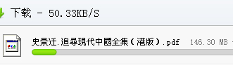
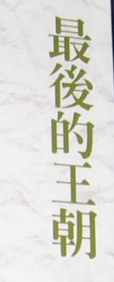
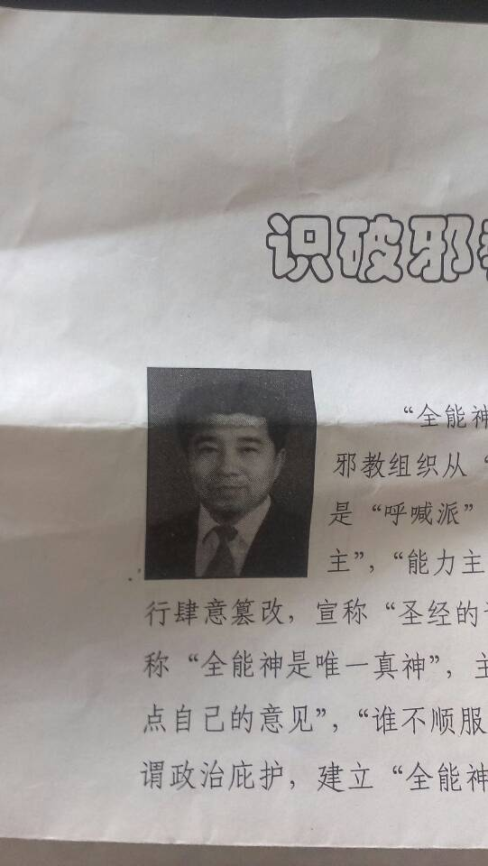

Conversation with 81184027 at Thu 08 May 2014 11:42:34 AM CST on 154115835 (webqq)
(11:42:57 AM) 福建-福州&水浒: [图片]刘春娇
女，27岁，湖北襄阳双沟镇人。信仰程度2年，2014年2月14号离家出走至今未归。消息更新至2014.05.08日。
身体健康！出走时带几件衣服，一台笔记本电脑。知情者联系网站管理员，谢谢。
反全能神邪教同盟会
http://www.xjshzzj.cn/h-pod-279-2_636_3.html
(11:37:36 AM) 醒悟: 说梦话也开除
(11:38:02 AM) 福建-福州&水浒: 邪教对待讲方言一律开除
(11:38:25 AM) 醒悟: 为何
(11:38:28 AM) 恨邪教: 是啊，如果你梦游，肯定是要开除的
(11:38:37 AM) 阿萨汗蛋包飯: 我说的是阿尔泰语系，她们就认为是邪灵附身，必须开除
(11:38:46 AM) 福建-福州&水浒: 给你定一个邪灵附体
(11:38:51 AM) 恨邪教: 邪灵附体
(11:39:13 AM) 福建-福州&水浒: :p:p
(11:39:18 AM) 醒悟: 那神不去邪啊:D
(11:39:44 AM) 恨邪教: 去不了，所以怕，干脆不要
(11:39:47 AM) 蔚蓝的天空: 说实话 我想加入全能体验一把
(11:39:51 AM) 福建-福州&水浒: :L
(11:39:54 AM) 阿萨汗蛋包飯: 跟普通话差别太大了，动词滞后的
(11:40:07 AM) 蔚蓝的天空: 看看的全能怎么又这么大的魔力、
(11:40:11 AM) 阿萨汗蛋包飯: 她们听不懂而惊慌
(11:40:16 AM) 蔚蓝的天空: 只是没有时间
(11:40:51 AM) 阿萨汗蛋包飯: 而且语速又快，说的时候又目露凶光
(11:40:51 AM) 恨邪教: 你现在好比我们说毒品，你说你抵抗力强
(11:40:57 AM) 阿萨汗蛋包飯: 她们都惊慌，所以把我开除了
(11:42:12 AM) 蔚蓝的天空: 我觉得全能洗不了我的脑
(11:42:57 AM) 福建-福州&水浒: [图片]刘春娇
女，27岁，湖北襄阳双沟镇人。信仰程度2年，2014年2月14号离家出走至今未归。消息更新至2014.05.08日。
身体健康！出走时带几件衣服，一台笔记本电脑。知情者联系网站管理员，谢谢。
反全能神邪教同盟会
http://www.xjshzzj.cn/h-pod-279-2_636_3.html
(11:43:11 AM) 恨邪教: 我刚才说我怕，就是因为我中毒十年，现在还余毒未清，一直在反邪教可是害怕自己错了
(11:43:37 AM) 阿萨汗蛋包飯: 一台笔记本电脑，瓦擦，搞不好是文字组的，会写见证文章
(11:44:22 AM) 阿萨汗蛋包飯: 害怕自己错了？？你怀疑神是对的？
(11:44:32 AM) 阿萨汗蛋包飯: 信仰太深了都会这样认为
(11:44:52 AM) 恨邪教: 我比任何人都希望国家快点瓦解这个邪教，好让我心安
(11:45:02 AM) 福建-福州&水浒: 会翻墙～～～
(11:45:15 AM) 福建-福州&水浒: 那更可怕
(11:45:30 AM) 恨邪教: 什么意思
(11:45:42 AM) 阿萨汗蛋包飯: 国家=政府，我们政府内忧外患，没空管这个
(11:46:22 AM) 福建-福州&水浒: 我看过邪教网那些信徒给全能神网站管理员提的问题，都一一得到回复
(11:46:35 AM) 恨邪教: 可是我们该怎么办啊，就看着我们的家人这样活着吗
(11:47:02 AM) 福建-福州&水浒: 我也会注册个会员向他们教会提问题
(11:47:39 AM) 醒悟: 管钱的是不是到一定级别啦
(11:47:44 AM) 恨邪教: 你想试试你的定力吗
(11:47:49 AM) 阿萨汗蛋包飯: 内忧：昆明事件广州事件云南及三峡库区小规模地震，地产开始下滑。外患：菲律宾黄岩岛争端，小日本琉球群岛版图西扩
(11:48:40 AM) 福建-福州&水浒: 保管钱财更多是邪教考验信徒的衷心程度
(11:48:51 AM) 阿萨汗蛋包飯: 中国的邻国都很嚣张
(11:48:58 AM) 福建-福州&水浒: 也不能说一定有价别
(11:48:59 AM) 阿萨汗蛋包飯: 政府忙的很，一直抗议
(11:49:09 AM) 恨邪教: 打仗，该打仗了，越是这样，我越是摆脱不了自身的毒素
(11:49:17 AM) 福建-福州&水浒: 保管钱财邪教是三人监督制度
(11:49:23 AM) 阿萨汗蛋包飯: 大红龙毒素？
(11:50:06 AM) 阿萨汗蛋包飯: 政府忙于抗议。外交部发言人和总理就是不提全能教。
(11:50:31 AM) lost message from #93082 to #93082
(11:50:34 AM) 福建-福州&水浒: 内忧外患
(11:50:31 AM) - -营长: 还是现在不足以引起政府的注意？
(11:50:58 AM) - -营长: 我觉得宗教信仰这个东西太可怕了？
(11:50:59 AM) 福建-福州&水浒: 这样形容不足为期，对邪教以维稳为主
(11:51:00 AM) 光: (11:50:31 AM) - -营长: 还是现在不足以引起政府的注意？ //政府烂事一堆
(11:51:05 AM) 光: 这个不是最烂的
(11:51:34 AM) - -营长: 嗯
(11:51:59 AM) 福建-福州&水浒: 毕竟信邪只是那么一搓人，
(11:52:18 AM) 福建-福州&水浒: 人民内部矛盾（家庭矛盾）
(11:52:28 AM) 恨邪教: 少吗，已经不少了
(11:52:44 AM) 福建-福州&水浒: 是不少
(11:53:31 AM) 恨邪教: 国家再不管管，我就干脆回头再去信了
(11:53:41 AM) 福建-福州&水浒: :撇嘴:
(11:53:45 AM) 福建-福州&水浒: 别啊
(11:54:14 AM) 福建-福州&水浒: 好不容易自己清醒，再信的话，你这～～～～
(11:54:54 AM) 安徽-淮南&文军: @恨邪教 国家肯定管
(11:55:24 AM) 安徽-淮南&文军: 至于国家高层怎么管，我们普通人肯定不知道
(11:55:36 AM) 安徽-淮南&文军: 但是更不能去打听
(11:56:30 AM) 安徽-淮南&文军: 目前对重点人员，特别是全能神小区，区，牧区了解的信息肯定在掌控
(11:57:00 AM) 安徽-淮南&文军: 大网未编织成，不会轻易下手
(11:57:55 AM) 安徽-淮南&文军: 另外涉及国际舆论以及宗教信仰方面，政府肯定全盘考虑
(11:58:22 AM) 安徽-淮南&文军: 打击全能神不可能全面开花
(11:58:45 AM) 安徽-淮南&文军: 肯定对全能神指挥系统打击
(11:59:05 AM) 安徽-淮南&文军: 普通信徒没有触及到法律
(12:03:54 PM) 恨邪教: 国际舆论，我们中国人的事情，关起门就是自己家的事，为什么要听外国的
(12:05:13 PM) 醒悟: 没有老毛的狠劲
(12:06:34 PM) 恨邪教: 是的，老毛的做法就很好，我自己国家的事，我们关起门来自己解决，谁的话也不听
(12:07:09 PM) 安徽-淮南&文军: 要知道全能神是假借基督教教义
(12:07:34 PM) 安徽-淮南&文军: 世界信徒高达八亿
(12:08:09 PM) 安徽-淮南&文军: 国际反华势力总拿信仰说事
(12:08:11 PM) - -营长: 有没有数据统计全能神人数是多少
(12:09:11 PM) 安徽-淮南&文军: 不知道大家有没有关注一下政治动向吗？
(12:09:19 PM) 醒悟: 越说越对着干就对了
(12:09:51 PM) 安徽-淮南&文军: 最近新闻中围绕邪恶势力宗教发布新闻
(12:10:17 PM) 恨邪教: 越忍让，人家越以为我们好欺负，挺起腰杆，看他们又敢对我们怎么样
(12:11:09 PM) 安徽-淮南&文军: 国家安全委员会，针对社会矛盾，特别是宗教矛盾在梳理
(12:11:11 PM) 醒悟: 上半年扫黄下半年扫赌。明年因该动手扫
(12:11:34 PM) 光: (12:08:11 PM) - -营长: 有没有数据统计全能神人数是多少 /.
(12:11:50 PM) 光: 秘密组织地下教会无法统计
(12:12:37 PM) 安徽-淮南&文军: 历史上邪恶势力的发展，都是短命的
(12:12:39 PM) 光: 但是一点可以确定，中国的宗教黑市的规模是很大的
(12:12:44 PM) 光: 东方闪电只是其一
(12:12:38 PM) 恨邪教: 中国干部办事，总是拖拖拉拉，所以才导致邪教猖狂
(12:13:28 PM) 光: 一旦被打击
(12:13:31 PM) lost message from #93125 to #93125
(12:13:35 PM) 安徽-淮南&文军: 和平年代，人们或多或少都存在浮躁现象
(12:13:37 PM) 光: 又会分化出很多分支
(12:14:00 PM) 光: 东方闪电就是这么来的
(12:15:01 PM) 安徽-淮南&文军: 即使现在全能神被取缔，但是残余势力肯定裂变成为其他邪恶组织
(12:15:30 PM) 安徽-淮南&文军: 只是换个名字而已
(12:15:29 PM) 光: 嗯
(12:15:35 PM) 光: 理论都是成熟的
(12:15:47 PM) 光: 组织机构也是照搬
(12:15:51 PM) 光: 也可以
(12:16:02 PM) 醒悟: 要杀才有用
(12:16:03 PM) 安徽-淮南&文军: 目前国内邪教组织高达十几个
(12:16:22 PM) 安徽-淮南&文军: 杀，不是那样简单的
(12:17:31 PM) 安徽-淮南&文军: 没有涉及刑事，采纳哪条法律条款
(12:18:45 PM) 安徽-淮南&文军: 邪教是20%邪恶徒控制80%善良人
(12:18:50 PM) 醒悟: 害死不少人骗了那么多钱
(12:19:07 PM) 醒悟: 杀头子
(12:19:49 PM) 安徽-淮南&文军: 只要坚信邪不压正
(12:20:54 PM) lost message from #93143 to #93143
(12:20:37 PM) 醒悟: 就是那些被害人可怜
(12:20:29 PM) 安徽-淮南&文军: 邪教有发展，就有灭亡
(12:20:40 PM) 安徽-淮南&文军: 这是常规道理
(12:21:19 PM) 恨邪教: 邪教已经成立二十年了，啥时候国家才会管呢
(12:21:34 PM) 醒悟: 等是最苦的事
(12:21:48 PM) 安徽-淮南&文军: 现在全能神已经到了衰退期
(12:22:47 PM) lost message from #93149 to #93150
(12:22:44 PM) 恨邪教: 十年二十年，又毁了多少人啊，老的骗怕了，小的长大了
(12:22:22 PM) 安徽-市区&钟馗: http://forum.china.com.cn/forum.php?mod=viewthread&tid=3648380&extra=page%3D1%26filter%3Dtypeid%26typeid%3D850%26typeid%3D850
(12:22:31 PM) 安徽-淮南&文军: 最高峰时候是2006……2012
(12:22:59 PM) 安徽-淮南&文军: 2013到现在是全能神发展危机时期
(12:23:01 PM) 醒悟: 现在比12年人多了
(12:23:03 PM) 光: 冀鲁豫这个地方很特别
(12:23:03 PM) 发送失败,错误号:1:
冀鲁豫这个地方很特别
(12:23:11 PM) 光: 冀鲁豫这个地方很特别
(12:23:19 PM) 安徽-淮南&文军: 不向过去发展速度
(12:23:33 PM) 安徽-市区&钟馗: 一些邪教徒处于“潜伏”状态，现在仍然在秘密发展
(12:23:34 PM) 光: 嘉庆年间冀鲁豫农民义军首领李文成
——李文成，生卒?—1813. 今河南滑县谢家庄人。木工出身，人称李四木匠。加入反清秘密组织“八卦教”成为主要教首，并改名天理教，徒众达数万。与北京地区坎卦教首林清约定起义时间，因泄密，李文成被捕。起义提前5天于9月10日举行，攻克滑县救出李文成。在占道口围浚县战斗中林清牺牲。李文成突围转太行山，留一部守滑县。在辉县司寨与清军激战中，李文成妻张氏亦挥刀巷战，李文成全家与部下举火自焚。数万义军血战三昼夜均壮烈牺牲。
(12:23:41 PM) 光: 以前闹过八卦教的
(12:24:11 PM) 光: 河北 山东 河南的交界处
(12:24:16 PM) 光: 这块地方
(12:24:39 PM) 安徽-淮南&文军: 2012打击全能神高层几乎被打击掉
(12:25:18 PM) 醒悟: 可惜没干干净
(12:25:35 PM) 安徽-淮南&文军: 现在全能神采用隐藏手段，高层不敢浮出水面，一直造成他们内部忧虑
(12:25:38 PM) 安徽-市区&钟馗: 但高层以下的仍然十分隐秘、狡猾和邪恶！
(12:26:00 PM) 安徽-淮南&文军: 你知道的就去举报吧
(12:26:07 PM) 蔚蓝的天空: 只有派特工 吧赵维山干掉
(12:26:08 PM) 福建-福州&水浒: :D
(12:26:19 PM) 蔚蓝的天空: 大女基督也干掉
(12:26:40 PM) 安徽-淮南&文军: 干掉他们谁不想
(12:26:52 PM) 安徽-市区&钟馗: 你没有证据和证据不足，举报有什么用呢？
(12:26:53 PM) 安徽-淮南&文军: 好好思量一下
(12:26:56 PM) 醒悟: 我看也是特工用
(12:26:59 PM) 光: 雷霆万钧 春风化雨
——抗战时期太行山抗日民主政府对封建会道门的整治
■魏宏运
抗日战争时期，中国共产党在太行山建立了两块根据地：北部属
晋察冀边区，南部属晋冀鲁豫边区，两个边区政府实行了许多新的政
策制度，改变了这一地区的社会结构和社会面貌。但是，从太行山根
据地的历史看，建立一种新的政治制度在一定条件下是可以实现的，
而要转变根植于人们日常生活中的封建迷信思想则不那么容易。日军
不断扫荡，烧杀抢掠，制造无穷无尽的灾难，凡日军魔爪所伸到的地
方，毫无例外地都成了悲惨的人间地狱。而日军又利用这种恐怖气氛
发展邪教会道门，编造谣言，藉以实施其侵略意图。这种现实一度给
根据地建设造成很大的麻烦。
一
当时的封建迷信组织多种多样，名目繁多，扑朔迷离，不易辨认。
有的会道门是历史上延续下来的，因民众贫困落后，没有文化，便滋
长起来。有的是抗战初期，因日军突然侵入，国民党军队溃败，农民
于兵荒马乱之中为抗御溃兵土匪骚扰所组织起来的。这些组织日久便
产生了弊端，或者是汉奸混杂其中实行操纵，或者被日军欺诱把持；
也有的变成了地痞土棍，鱼肉乡民、反抗政府；还有日军直接组织的，
改头换面，利用封建关系，散布迷信思想，愚弄落后群众，麻痹中国
人的抗日意识，破坏抗日战争。一时形形色色的封建结社，或秘密或
半公开地活动着。
究竟会道门有多少，据当时调查，仅黎城县就有“不下40多种”。
这些组织到1940年后多为日伪操纵或直接由日军所控制，原来单纯的
封建结社变了质，表面上是封建迷信组织，而背后则受敌特务机关新
民会的指使。敌人在孟县秘密组织的红枪会，开始由特务人员出面拉
拢，继之打出了“反对八路军”的口号，目的是破坏抗日工作。他们
拒缴救国公粮，捕杀抗日志士，日军所组织的“大东亚民族解放耶苏
教”，便藉宗教巧立名目，麻痹中国民众。所有这些会道门的组织是
很严密的，其头目无一例外地都在极力神化自己。
这些封建结社名称和组织形式不尽相同，但诱骗群众、鼓惑人心
的手法几乎完全一致，都以虚构的自然灾害吓唬无知的农民。其惯用
手法是宣称天下将有大灾大难，入了会道就可以躲灾避祸。如1942年，
个别地方发生鸡瘟，会道门造谣说：“大劫大难已临头了，现在已有
鸡瘟，将来鸡瘟后是猪狗瘟，猪狗瘟之后，就是人瘟了，若不赶快参
加会门，大劫难逃。”这些荒诞古怪的谎言，四处扩散，总会在群众
中有市场的。不少地方信教的人突然增多，相当多的人对日伪伪造的
神顶礼膜拜。日伪还计划1942年三个月以内要在易县发展130盘教徒。
明目张胆为日军侵略铺路的是大东亚民族解放耶苏教。该教大肆
宣扬“圣战”，“参加吧，参加后日本来了不烧不杀”，“人打我不
还手，人骂我不还言，自有天堂降吉祥”。日军规定每七天到城里礼
拜一次，各村派代表参加，凡入该教者，每人发一入教证书。佛教会
的总领、分领和盘主们除了宣扬日本人来了不烧不杀的口号外，还说
“修好了，过金桥，过银桥”。这是秉承日军的意旨讲的。日军说：
“我们要的是现在，我们把将来让给你们。我们只要肉体和实惠，我
们把灵魂和口惠让给你们，让你们去说什么天堂地狱，只要没有人再
来反抗。”从精神上、意志上麻痹中国人民，是日寇最毒辣的一招。
这些所谓的会道门都有敛财之术，所敛之财供其挥霍。如加入佛
教会，开始要交1元挂号费，接着就是香钱、油钱、买命扎根钱，3元、
5元、8元、10元不等。会员要升红草、黑草，起码要交3元，升盘主起
码要交4元。涉县梁家岩、西坡一带的佛教会员每人每月要交5角以上
的会费。加入金钱道的，除了要花4元钱买一张杏黄色的布质牌号外，
还得摆供发誓，一年摆供8次，每摆一次供最少得花一二十元。这些供
礼均被道首分享了。
入道后会员成天练功，求神念佛。日伪通过他们刺探军情，阻碍
抗日政府法令的实施。抗日民主政府组织群众反对敌伪抓丁，发动青
年分散到山沟中去，他们则欺骗群众到敌据点中去拜佛。汪精卫是头
号汉奸，根据地发动强大的反汪运动，他们却说汪不是汉奸，是假投
降。治安军是日军的爪牙，他们却宣传治安军就是中央军，是抗日的。
凡此等等，都混淆视听，模糊敌我界限。在冀西、漳北、太南一带，
各类会道门都在散布“屈服”的观念，逼迫群众投靠敌人。他们利用
各种偶然事件兴风作浪，如见树出水，便造谣说“菩萨”哭了，要遭
大殃，以期造成社会恐怖，为其举行叛乱作准备。
1941年，黎城离挂道认为叛变的时机成熟，借口公粮重，负担不
起，组织其信徒，发动叛变，攻打县政府、公安局等，这次叛乱被镇
压下去了，它发生在太行山根据地腹地，震动很大，人们从此对封建
结社有了清醒的认识。
二
晋冀鲁豫边区政府鉴于各地秘密会道门组织已日渐为日军汉奸所
利用，于1942年4月颁发布告，除重申保护宗教、尊重人民正当信仰及
维护人民正当结社外，对于一切受敌伪利用之秘密结社，则按照政府
之规定严加取缔，布告的主要内容是：
一、凡本边区内违反抗日利益之一切非法秘密落后迷信组织，如
八卦道、大仙道、孔子道、长毛道、还乡道等，或其变相化名之组织
一律取缔，并宣布解散。
二、受敌利用，组织会门造谣群众，图谋破坏抗日秩序，执迷不
悟者，一经查处，均按汉奸处置。
三、假借会门、道门，建坛设祭，敲索人民金钱（如收香钱）者，
予以诈财之惩处。
四、凡远赴沦陷区（平津、太原等地）受敌奸所组织之道教、佛
教等总会训练者，应向各级抗日政府声明，请求登记，悔过自新，不
得再行活动。
五、凡参加会门道门及其他一切非法秘密团体者，应立即退出。
根据地军民以这一决议为武器，在太行山区发动了强大的政治攻
势。许多的会道门徒经过了一段痛苦的路程，如梦初醒，从迷雾中走
出来，各种封建迷信结社相继瓦解。
中共黎城县委和县政府根据当时形势和历次布告精神，对运动道
首进行严厉打击，镇压了常花庭、赵连城等7名会首，对受蒙蔽的骨干
道徒集中整训，重点教育，一般道徒声明退道不予追究。1942年7月
22日，政府再次发出布告，号召逃往敌占区之离挂道和参加伪组织的
人员，必须在10月15日以前回家，向政府声明，政府不咎既住，并保
证他们生命财产之安全。若执迷不悟，甘心附敌，逾期不回者，政府
当按其情节之轻重，予以严惩。但声明假如他们能悔过返回，政府仍
本一贯的宽大政策，决不严惩。
黎城孔子道头目李瑞云是一个汉奸，经多次审讯，李对于暗中勾
结日军阴谋暴动、破坏抗日政权等情均供认不讳，县政府呈请边区高
等法院批准，于4月19日执行枪决。
邢台等地采取群众自我教育、辩证等方法来摧毁金钱道。1943年
1月21日晚，组织群众以道好还是农救会好为题，拿农民运动六大纲领
和金钱道的欺骗宣传相对照，展开讨论。受骗的道徒纷纷发言，剥开
了金钱道的画皮。
涉县二区配合当地驻军于1942年10月15日对东西辽城以下20余个
村庄实行抽查户口的办法，结果在索堡郝家廷家中查出九宫道会门的
请神秘咒与七方八度（即分组）名单。在西辽城发现九宫道会李暮财、
长毛道杨占魁的骗人符咒。在星桥天主堂内搜查出大批敌人的传单和
日军骑兵团的团旗。
漳北第5专署和当地驻军一起破获了涉县梁家岩、西坡村等地的大
东亚佛教会，其主要分子赵文礼、刘国权、赵东起、赵何泉等全部被
擒。不少误入了圈套的人，明白了该组织的性质后已暗暗退出，其头
目被捕后，只梁家岩一地即有30余人自首悔过。
正太路以北地区的佛教会会员经过抗日政府、团体的宣传教育，
同时进步的子女说服自己的父母，有经验的父母动员自己的子女不要
再受骗，绝大多数的会员和头子都醒悟了。到1942年5月底，龙华五区
已有1500多人自动脱离，占佛教会全体会员的90％以上。
三
太行山抗日民主政府对于反动的迷信组织采取果断的消灭政策。
对于含有封建迷信的结社，如行动无违反法纪，亦无破坏抗战，则积
极争取，耐心地说服教育，引导其参与抗战。凡被骗胁从之徒，或为
生活所迫误入歧途之分子，均给以洗心革面的机会。当时革命领导者
对各会门及其教徒都有清醒的分析，他们认为会门中的道徒，大部分
是一般质朴的农民，其中不乏义侠之士，富有民族意识，不甘为虎作
伥。黎城境内先天道态度的转变，就是突出之一例。该道道首杨忠、
杨从善等看到各地会门大都被敌人利用，助纣为虐，破坏抗战，恐受
敌诱迫，毅然向政府声明，自愿取消先天道名义，解散组织，并将道
内公款的一部分捐助政府，帮助抗战事业。就是敌占区彭城的先天道，
除了其头目是汉奸外，大部分会员对敌伪统治均感痛苦，尤其对敌特
务队、宪兵队、伪反共自治团对群众的骚扰极为痛恨。柳村的先天道
终于和莲花山伪自卫团及彭城敌人发生冲突。磁县日军曾往石桥村抢
粮，并捕捉该村先天道徒充当炮灰，道徒遂群起反对。
使一时受蒙蔽愚弄的群众脱出陷阱仅仅是治标的办法，要使迷信
真正消灭则是一长期的任务，还需依靠政治经济文化的进步。1939年
8月27日《新华日报》（华北版）的社论对此有一番精彩而深刻的论述。
其中讲到，治本之道首在改善民众生活，提高民众之政治文化水准，
破除民众之迷信观念，民生既经向上，教育既经普及，则一切妖道邪
说不攻自破，更无欺蒙群众之魔力。其次还要开展群众性的除奸运动，
提高群众对汉奸的识别力，提高群众的警惕性，使人人有同仇敌忾之
心，个个有视奸为仇的情绪，则敌寇汉奸自亦无法施其伎俩，这是巩
固根据地永久根本的重要任务之一。太行山根据地在战时，把发展生
产和繁荣经济放在首要地位，在乡村中普遍开展新文化运动，运用各
种形式提高群众觉悟和文化水平，这是非常有历史意义的。社会风气
的转变要经过政府机关和群众团体通力合作，一面由政府下达命令，
一面由教育机关和群众团体在下面动员起来，向迷信步步进攻，必然
所向披靡。
猖獗一时的太行山会道门被消灭是历史的必然。这是根据地在文
化思想上的一大贡献。
(12:27:13 PM) 光: 抗日战争时期，中国共产党在太行山建立了两块根据地：北部属
晋察冀边区，南部属晋冀鲁豫边区，两个边区政府实行了许多新的政
策制度，改变了这一地区的社会结构和社会面貌。但是，从太行山根
据地的历史看，建立一种新的政治制度在一定条件下是可以实现的，
而要转变根植于人们日常生活中的封建迷信思想则不那么容易。日军
不断扫荡，烧杀抢掠，制造无穷无尽的灾难，凡日军魔爪所伸到的地
方，毫无例外地都成了悲惨的人间地狱。而日军又利用这种恐怖气氛
发展邪教会道门，编造谣言，藉以实施其侵略意图。这种现实一度给
根据地建设造成很大的麻烦。
(12:27:19 PM) 光: 当时的封建迷信组织多种多样，名目繁多，扑朔迷离，不易辨认。
有的会道门是历史上延续下来的，因民众贫困落后，没有文化，便滋
长起来。有的是抗战初期，因日军突然侵入，国民党军队溃败，农民
于兵荒马乱之中为抗御溃兵土匪骚扰所组织起来的。这些组织日久便
产生了弊端，或者是汉奸混杂其中实行操纵，或者被日军欺诱把持；
也有的变成了地痞土棍，鱼肉乡民、反抗政府；还有日军直接组织的，
改头换面，利用封建关系，散布迷信思想，愚弄落后群众，麻痹中国
人的抗日意识，破坏抗日战争。一时形形色色的封建结社，或秘密或
半公开地活动着。
(12:27:28 PM) 光: 一直都有
(12:27:37 PM) 光: http://www.gmw.cn/01gmrb/2000-04/14/GB/04%5E18390%5E0%5EGMC3-116.htm
(12:27:52 PM) 光: 这也是东方闪电选择的基地
(12:27:44 PM) 醒悟: 共产党几个人都暗杀不了
(12:27:56 PM) lost message from #93178 to #93178
(12:27:58 PM) 安徽-淮南&文军: 没有背后支持，包括经济，技术，光靠赵能反天吗？
(12:28:14 PM) 光: 有呼喊派的支持
(12:28:18 PM) 安徽-市区&钟馗: 应该重拳碾碎任何异端！
(12:28:24 PM) 光: 这是肯定的
(12:28:34 PM) 光: 呼喊派来自台湾
(12:28:53 PM) 安徽-淮南&文军: 呼喊派过去是台湾支持
(12:29:01 PM) 安徽-淮南&文军: 台湾是美国支持
(12:29:33 PM) 安徽-淮南&文军: 利用呼喊拍，扰乱国家安定
(12:29:33 PM) 光: 晋冀鲁豫
(12:29:41 PM) 光: 这个地方会道门的基础也好
(12:30:00 PM) 安徽-淮南&文军: 现在利用全能神扰乱社会和谐
(12:30:09 PM) 安徽-淮南&文军: 道理很简单
(12:30:15 PM) 光: 选择这里说明邪教里面有能人的
(12:30:45 PM) 光: 类似于水浒里面智多星吴用这样的人物一定有的
(12:32:03 PM) 光: 晋冀鲁豫边区政府鉴于各地秘密会道门组织已日渐为日军汉奸所
利用，于1942年4月颁发布告，除重申保护宗教、尊重人民正当信仰及
维护人民正当结社外，对于一切受敌伪利用之秘密结社，则按照政府
之规定严加取缔，布告的主要内容是：
一、凡本边区内违反抗日利益之一切非法秘密落后迷信组织，如
八卦道、大仙道、孔子道、长毛道、还乡道等，或其变相化名之组织
一律取缔，并宣布解散。
二、受敌利用，组织会门造谣群众，图谋破坏抗日秩序，执迷不
悟者，一经查处，均按汉奸处置。
三、假借会门、道门，建坛设祭，敲索人民金钱（如收香钱）者，
予以诈财之惩处。
四、凡远赴沦陷区（平津、太原等地）受敌奸所组织之道教、佛
教等总会训练者，应向各级抗日政府声明，请求登记，悔过自新，不
得再行活动。
五、凡参加会门道门及其他一切非法秘密团体者，应立即退出。
根据地军民以这一决议为武器，在太行山区发动了强大的政治攻
势。许多的会道门徒经过了一段痛苦的路程，如梦初醒，从迷雾中走
出来，各种封建迷信结社相继瓦解。
(12:32:12 PM) lost message from #93194 to #93195
(12:31:48 PM) 福建-福州&水浒: ～～～
(12:31:37 PM) 恨邪教: 我现在浑身是伤，我不上班在家给他打架，所以说我是最大受害者
(12:31:23 PM) 安徽-市区&钟馗: http://news.qq.com/a/20140427/001519.htm?pgv_ref=aio2012&ptlang=2052 但愿全能神邪教徒也能成为过街老鼠人人喊打！
(12:31:15 PM) 安徽-淮南&文军: 再茂盛的树木，没有基础根本无法生长
(12:33:05 PM) 光: 各类邪教猖獗，其实就是会道门复苏的信号
(12:33:39 PM) lost message from #93198 to #93200
(12:33:41 PM) 恨邪教: 为什么中国人，一直都摆脱不了这些呢
(12:33:27 PM) 安徽-市区&钟馗: 言之有理！
(12:34:25 PM) 光: 三、假借会门、道门，建坛设祭，敲索人民金钱（如收香钱）者，
予以诈财之惩处。
(12:34:35 PM) 光: 会道门以敛财为主
(12:34:50 PM) 安徽-淮南&文军: 中国人的传统观念是几千年的
(12:34:59 PM) 光: 犯罪分子 反政府是很正常的
(12:35:05 PM) 光: 本身就是违法之徒
(12:35:21 PM) 安徽-淮南&文军: 另外目前和平年代，人们思想不一
(12:35:31 PM) 安徽-淮南&文军: 信仰金钱
(12:35:47 PM) 恨邪教: 赵维山是不是总结了这些骗术的精髓，所以才骗到这么多人
(12:35:50 PM) 光: 基础好
(12:36:01 PM) 安徽-淮南&文军: 就是的
(12:36:17 PM) 恨邪教: 哈哈哈哈，是上当的基础吗
(12:36:17 PM) 光: 嗯
(12:36:23 PM) 安徽-淮南&文军: 为什么全能神一直讲，传福音
(12:36:39 PM) 安徽-市区&钟馗: 无欲则刚！
(12:37:52 PM) 安徽-市区&钟馗: 有求皆苦！
(12:38:34 PM) 蔚蓝的天空: 赵维山这样敛财的方法不错 一个信徒一块钱就上千万
(12:38:45 PM) 安徽-市区&钟馗: 无欲则无懈可击。
(12:39:08 PM) 安徽-市区&钟馗: 有求则求令智昏。
(12:39:19 PM) 安徽-淮南&文军: @反邪★安徽钟馗 我建议你快去举报
(12:39:28 PM) 安徽-淮南&文军: 其他没用
(12:39:59 PM) 安徽-市区&钟馗: 我不会举报的。如果国家不打击，举报也是没有用的。
(12:40:21 PM) 福建-福州&水浒: 神经病
(12:40:27 PM) 安徽-淮南&文军: 那是你自己事情
(12:40:57 PM) 安徽-市区&钟馗: 任何事物都有其产生、发展、高潮和灭亡的过程。我在静观其变。
(12:40:59 PM) 安徽-淮南&文军: 等米下锅吧
(12:41:06 PM) 蔚蓝的天空: 我估计赵维山会在美国的帮助下 购买军火
(12:41:15 PM) 安徽-淮南&文军: 呵呵
(12:41:33 PM) 蔚蓝的天空: 准备对大红龙发动军事打击
(12:42:14 PM) 福建-福州&水浒: 可能性不大
(12:42:15 PM) 蔚蓝的天空: 全能这么多年 怎么说手里也有几十个亿
(12:42:26 PM) 安徽-市区&钟馗: 富可敌国。
(12:42:28 PM) 安徽-淮南&文军: 全能神就是避免恶性世间，怕引火上身
(12:42:29 PM) 蔚蓝的天空: 购买军火的钱还是有的
(12:42:48 PM) 蔚蓝的天空: 这是没有成本的
(12:42:56 PM) 福建-福州&水浒: 枪支:gun:流通来源是个问题
(12:43:03 PM) 恨邪教: 中国现在的形式也很适合邪教的发展，中国要帮助贫困户，【邪教徒啥也不用干，很贫穷】要富人纳税，邪教徒更不想干了，加上到处拆迁，邪教徒拿着拆迁款，感谢神的恩赐，哎中国难道真的该亡了？咋都合着邪教徒的胃口了呢
(12:43:14 PM) 安徽-市区&钟馗: 蹈光养晦求发展，这就是全能神邪教的狡猾之处！
(12:43:52 PM) 福建-福州&水浒: 理论一套一套的
(12:43:59 PM) 光: 深挖洞，广积粮，缓称王，比法轮功精明
(12:44:34 PM) 光: 犯罪组织也是有智慧的
(12:44:36 PM) 恨邪教: 咋做，我不知道
(12:44:29 PM) 福建-福州&水浒: 随他去吧
(12:44:44 PM) lost message from #93243 to #93243
(12:44:45 PM) 福建-福州&水浒: 自找苦吃
(12:44:11 PM) 安徽-淮南&文军: @反邪★安徽钟馗 道理你明白这么多，为什么不去依照自己方式做
(12:44:57 PM) 福建-福州&水浒: 犯罪组织也是有智慧的
(12:45:00 PM) 安徽-淮南&文军: @反邪★安徽钟馗 事情让你分析的很透彻呀！具体的防范措施呢
(12:45:18 PM) 福建-福州&水浒: 坐等吃空
(12:45:35 PM) 蔚蓝的天空: 措施 和主意 光 那里还是有一些的
(12:45:41 PM) 安徽-市区&钟馗: 不要只看表面。自己慢慢想去。
(12:45:46 PM) 安徽-淮南&文军: 天下没有免费的午餐
(12:45:48 PM) 光: 嗯
(12:45:54 PM) 光: 具体还是靠自己
(12:45:59 PM) 光: 要变通
(12:46:15 PM) 安徽-淮南&文军: 更没有等，靠，要的结果出现
(12:46:25 PM) 安徽-市区&钟馗: 世上从来就没有什么救世主！
(12:46:34 PM) 安徽-市区&钟馗: 孤独者自助！
(12:47:14 PM) 恨邪教: 哈哈哈，我不知道具体该咋做，我老公跟别的男人不一样，他从小就信天主，他很内向，不喜欢跟别人交流，他认准的事，很难回头
(12:47:17 PM) 福建-福州&水浒: 当人的自己的思维走入死胡同，着急那肯定是不会自己转身了
(12:47:17 PM) 蔚蓝的天空: 光 你妈妈现在彻底改变了吗
(12:47:32 PM) 安徽-淮南&文军: 不要把自己设定在真空中，心态决定一个人的思维
(12:47:30 PM) 光: 生活上和正常人差不多了
(12:47:44 PM) 福建-福州&水浒: 就比如昨晚与光讨论乌鸦喝水的故事
(12:47:50 PM) 福建-福州&水浒: :D
(12:47:50 PM) 光: ：）
(12:48:24 PM) 安徽-淮南&文军: 语言决定一个人智慧与后期行动
(12:48:46 PM) 醒悟: 对的
(12:49:41 PM) 安徽-淮南&文军: 邪教的确邪恶，但是不信着身上那个敢讲，没有羡慕，嫉妒，狠的思想
(12:49:51 PM) 醒悟: 在发展下去也许邪教真有动乱的那天
(12:50:08 PM) 光: 闹不大
(12:50:16 PM) 光: 虽然邪教骗了不少钱
(12:50:22 PM) 蔚蓝的天空: 会的 全能发展下去 就像太平天国
(12:50:19 PM) 光: 但是打仗不行
(12:50:28 PM) 光: 让老太太们去打仗
(12:50:40 PM) 光: 这画面无法想象
(12:50:50 PM) 蔚蓝的天空: 怎么会不行 里面也有在军队服役过
(12:50:53 PM) 光: 女的多
(12:50:57 PM) 光: 信徒比例
(12:51:03 PM) 恨邪教: 我给他揭露，我给他好说，坏说，他都不听，我给他打，跟他拼命，我跟踪，都没用
(12:51:08 PM) 蔚蓝的天空: 青壮年的男人也多
(12:51:10 PM) 醒悟: 人身炸弹，东炸炸西炸炸
(12:51:16 PM) 光: 我这边统计的比例
(12:51:23 PM) 蔚蓝的天空: 你不要忘记 黑寡妇
(12:51:21 PM) 光: 10:1
(12:51:28 PM) 光: 女的和男的
(12:51:40 PM) 安徽-淮南&文军: 言行不一难成事，空话，大话只能说明一点，不理性
(12:51:56 PM) 光: 这就决定了他们只能骗钱不能造反
(12:52:08 PM) 福建-福州&水浒: 当自家门口的垃圾一天天多起来的时候，每天不去清理一些，长期堆积那肯定发出的恶臭堪比腐尸的味道
(12:52:07 PM) 光: 成员决定了
(12:52:13 PM) 安徽-淮南&文军: 是的
(12:52:23 PM) 蔚蓝的天空: 如果任其发展 会有那天的
(12:52:40 PM) 蔚蓝的天空: 就是因为里面都是女人
(12:52:42 PM) 安徽-淮南&文军: 壮大骗子队伍，不敢造反
(12:52:42 PM) 光: 那也是其他宗教了
(12:52:47 PM) 光: 东方闪电不行
(12:52:57 PM) 安徽-淮南&文军: 这是全能神发展宗旨
(12:52:58 PM) 蔚蓝的天空: 因为小孩最听母亲的
(12:53:12 PM) 蔚蓝的天空: 新疆的暴徒就是这样
(12:53:21 PM) 恨邪教: 我努力了，我每天都努力，我没有放弃啊
(12:53:24 PM) 福建-福州&水浒: 都学学安徽钟馗吧，各家不扫门前雪
(12:53:45 PM) 安徽-淮南&文军: 全能神信徒女人男人比例大家应该知道
(12:53:57 PM) 蔚蓝的天空: 新疆的极端势力首先洗脑的就是妇女
(12:54:02 PM) 安徽-淮南&文军: 要是想造反干嘛用女人
(12:54:04 PM) 光: 我这边填写咨询登记表的结果看
(12:54:11 PM) 蔚蓝的天空: 然后由她们传给孩子
(12:54:09 PM) 光: 比例是这样的
(12:54:16 PM) 光: 从09年开始统计的
(12:54:21 PM) 醒悟: 钱多的花不完了，不干点事?老不干美国人会保护他?
(12:54:29 PM) 蔚蓝的天空: 所以新疆的暴力事件不断
(12:54:45 PM) 福建-福州&水浒: 不举报（举报是一种义务）任由家人传教邪教壮大肯定还是有市场的
(12:54:41 PM) 光: 应该和事实差不多
(12:55:02 PM) 蔚蓝的天空: 他们从小教育孩子反对中共
(12:55:15 PM) 安徽-淮南&文军: 现在无论任何战，都是经济战
(12:55:24 PM) 蔚蓝的天空: 所以不要认为女人成不了事
(12:55:45 PM) 安徽-淮南&文军: 美国和中国打口水，其目的是遏制中国
(12:55:54 PM) 蔚蓝的天空: 经过这么久的发展 全能的经济基础已经有了
(12:56:12 PM) 醒悟: 女人的身体也是可怕的武器
(12:56:12 PM) 蔚蓝的天空: 如果再有美国做后盾的话
(12:56:30 PM) 安徽-淮南&文军: 支持邪教，其目的是混乱中国基础烂跟
(12:56:34 PM) 蔚蓝的天空: 第二个太平天国就要上演了
(12:56:54 PM) 蔚蓝的天空: 是啊
(12:57:07 PM) 蔚蓝的天空: 孩子从小最听母亲的话
(12:57:14 PM) 安徽-淮南&文军: 放心吧，绝对没有第二个太平天国
(12:57:22 PM) 醒悟: 推不翻也要你乱
(12:57:38 PM) 蔚蓝的天空: 很难说
(12:57:59 PM) 蔚蓝的天空: 如果中共的腐败继续加剧
(12:58:08 PM) 蔚蓝的天空: 很难说
(12:58:13 PM) 安徽-淮南&文军: 全能神不出几年，他的发展空间，生存空间肯定渺小
(12:59:32 PM) 醒悟: 那是没那么强大，群众还是多数反邪的
(12:59:50 PM) 蔚蓝的天空: 和当年的大红龙一样 国军也是看不上
(01:00:04 PM) 蔚蓝的天空: 可最后只能到小岛了
(01:00:46 PM) 醒悟: 当年群众站在共产党一边
(01:01:53 PM) 醒悟: 不知道邪教离婚率多少
(01:02:04 PM) 蔚蓝的天空: 很多
(01:02:38 PM) 蔚蓝的天空: 我去律师哪里咨询的时候 有很多是因为这个
(01:02:45 PM) 醒悟: 离的越多反邪的越多
(01:03:20 PM) 向北方゛明年此时: 腐败加剧。
(01:03:25 PM) 向北方゛明年此时: 你觉得可能吗？
(01:04:00 PM) 向北方゛明年此时: 你只搜集一些负面的、过时的信息，你关注过最近国内的变化吗
(01:04:05 PM) 醒悟: 不可能!习大大干的很好
(01:04:14 PM) 蔚蓝的天空: 政府不严加治理的话
(01:04:29 PM) 蔚蓝的天空: 你也只能在群里发牢骚
(01:04:34 PM) 向北方゛明年此时: 你就没看过最近的新闻吗？最近党中央反腐成果看不到吗
(01:04:50 PM) 蔚蓝的天空: 那只是冰山一角
(01:04:58 PM) 向北方゛明年此时: 无论是省长县长市长，最近没有惩治吗
(01:05:09 PM) 向北方゛明年此时: 对啊，冰山一角
(01:05:15 PM) 蔚蓝的天空: 老虎打老虎
(01:05:21 PM) 向北方゛明年此时: 我问你，惩治了没有？
(01:05:36 PM) 向北方゛明年此时: 那就不要打了，你就满意了？
(01:05:43 PM) lost message from #93349 to #93349
(01:05:47 PM) 蔚蓝的天空: 习大大只能在任八年
(01:05:46 PM) 向北方゛明年此时: 你别站着说话不腰疼
(01:05:54 PM) 向北方゛明年此时: 以前打过吗
(01:06:12 PM) 蔚蓝的天空: 之后利益集团还会反扑、
(01:06:17 PM) 向北方゛明年此时: 你懂什么？你以为这届政府只是打老虎吗
(01:06:19 PM) 蔚蓝的天空: 打过呀
(01:06:31 PM) 不再漂: 打了一个还有千千万万个
(01:06:32 PM) 蔚蓝的天空: 哪届政府都打过、
(01:06:39 PM) 向北方゛明年此时: 现在不仅打，还制定机制
(01:06:44 PM) 蔚蓝的天空: 目的只是排除异己
(01:06:58 PM) 向北方゛明年此时: 立法
(01:06:59 PM) 不再漂: 什么机制 有用吗
(01:07:05 PM) 不再漂: 毛用没有
(01:07:10 PM) 向北方゛明年此时: 没用？
(01:07:19 PM) 蔚蓝的天空: 关键是人
(01:07:23 PM) 向北方゛明年此时: 你好好学习吧
(01:07:34 PM) 向北方゛明年此时: 打的就是那些假党员
(01:07:34 PM) 不再漂: 关键是制度
(01:07:36 PM) 蔚蓝的天空: 朱元璋的洪武之治
(01:07:46 PM) 蔚蓝的天空: 看看谁敢
(01:07:52 PM) 向北方゛明年此时: 顶着共产党的帽子，血肉人民
(01:07:58 PM) 向北方゛明年此时: 这样的人不该打吗
(01:08:02 PM) 蔚蓝的天空: 朱总理没有反腐吗
(01:08:22 PM) 蔚蓝的天空: 老虎打老虎
(01:08:27 PM) 向北方゛明年此时: 目光不要短浅，不要幼稚
(01:08:37 PM) 向北方゛明年此时: 习近平为了什么？
(01:08:42 PM) 蔚蓝的天空: 如果薄书记上台
(01:08:47 PM) 向北方゛明年此时: 为了国家统一，不分裂
(01:09:08 PM) 蔚蓝的天空: 我相信我搞个天翻地覆
(01:09:10 PM) 向北方゛明年此时: 你要是主席，你肯定让各民族分裂
(01:09:35 PM) 向北方゛明年此时: 中国肯定不是目前这个面积
(01:09:53 PM) 向北方゛明年此时: 房价降了没有？
(01:10:02 PM) 向北方゛明年此时: 贪官少了没有？
(01:10:25 PM) 向北方゛明年此时: 农业税，取消没有？
(01:10:32 PM) 向北方゛明年此时: 公车改革没有？
(01:10:50 PM) 向北方゛明年此时: 自己说
(01:10:55 PM) 向北方゛明年此时: 有没有？
(01:11:11 PM) 向北方゛明年此时: 你以为一个国家像一个小家庭那么小吗
(01:11:24 PM) 向北方゛明年此时: 让你当主席，你会怎样？
(01:11:40 PM) 蔚蓝的天空: 上述的问题 薄熙来上台就会迎刃而解
(01:11:57 PM) 向北方゛明年此时: 像苏联那样，分崩瓦解你就满意是吗
(01:12:10 PM) 向北方゛明年此时: 薄熙来上台就迎刃而解？？
(01:12:14 PM) 不再漂: 苏联本来就是加盟的
(01:12:21 PM) 不再漂: 不是一个国家，跟中国不一样
(01:12:25 PM) 向北方゛明年此时: 你这么懂。你应该当主席
(01:12:30 PM) 蔚蓝的天空: 那为什么把薄书记搞下台呢 是因为利益集团的操作
(01:12:54 PM) 向北方゛明年此时: 必须把他搞下台
(01:13:06 PM) 向北方゛明年此时: 一个国家，不统一行吗
(01:13:21 PM) 蔚蓝的天空: 因为他要来一场文革事的革命
(01:13:37 PM) 蔚蓝的天空: 要彻底清算利益集团
(01:13:38 PM) 向北方゛明年此时: 一个省一个调子，各管各的，那不是分裂吗
(01:13:44 PM) 向北方゛明年此时: 必须清算
(01:13:58 PM) 向北方゛明年此时: 谁不步伐一致，就是统一的敌人
(01:13:59 PM) 蔚蓝的天空: 王石都说过
(01:14:08 PM) 向北方゛明年此时: 不懂政治别瞎说了
(01:14:29 PM) 向北方゛明年此时: 还文革？把你所有亲戚都清算 你愿意是吧
(01:14:53 PM) 向北方゛明年此时: 你不为国家做贡献，天天抱怨国家
(01:15:00 PM) 向北方゛明年此时: 你为国家做了什么？
(01:15:18 PM) 向北方゛明年此时: 天天问国家我们做了什么，你想想你为祖国做了什么？？
(01:15:23 PM) 向北方゛明年此时: 天天问国家我们做了什么，你想想你为祖国做了什么？？
(01:15:42 PM) 向北方゛明年此时: 共产党让人们翻身
(01:15:49 PM) 向北方゛明年此时: 共产党打的天下
(01:15:55 PM) 向北方゛明年此时: 拱手让给别人？
(01:16:09 PM) 蔚蓝的天空: 你没坐亏心事 你怕清算吗
(01:16:10 PM) 向北方゛明年此时: 你往上数三代
(01:16:17 PM) 向北方゛明年此时: 是不是贫民
(01:16:23 PM) 蔚蓝的天空: 不清算 就要亡党
(01:16:40 PM) 向北方゛明年此时: 要不是共产党打地主分田地，你还是奴隶
(01:16:45 PM) 不再漂: 翻身做奴隶
(01:16:59 PM) 向北方゛明年此时: 承认，党是有问题
(01:17:03 PM) 向北方゛明年此时: 文革是错误
(01:17:11 PM) 向北方゛明年此时: 改革也有问题
(01:17:16 PM) 蔚蓝的天空: 文革无措
(01:17:18 PM) 向北方゛明年此时: 没有不承认
(01:17:34 PM) 向北方゛明年此时: 文革无错？？你快闭嘴吧
(01:17:36 PM) 蔚蓝的天空: 文革只是失败不是错误
(01:17:47 PM) 蔚蓝的天空: 你不懂历史
(01:18:02 PM) 向北方゛明年此时: 文革 不让工人上班，不让学生学习，不让科学家搞研究
(01:18:08 PM) 向北方゛明年此时: 天天闹革命
(01:18:17 PM) 向北方゛明年此时: 饿的你还是轻
(01:18:22 PM) 福建-福州&水浒: 呵呵
(01:18:28 PM) 向北方゛明年此时: 现在吃饱了还是骂娘
(01:18:41 PM) 包头-青山&随心: 人活着就是.错误
(01:18:41 PM) 向北方゛明年此时: 你这样的，饿肚子时候骂娘
(01:18:42 PM) 蔚蓝的天空: 那是为了以后的长治久安
(01:18:49 PM) 向北方゛明年此时: 吃饱了还是骂娘
(01:18:58 PM) 蔚蓝的天空: 那是毛爷爷远见
(01:19:04 PM) 蔚蓝的天空: 你不懂历史
(01:19:09 PM) 蔚蓝的天空: 也不懂政治
(01:19:14 PM) 向北方゛明年此时: 吃不饱时，敲着碗骂娘
(01:19:17 PM) 福建-福州&水浒: 有道理没事搞什么大跃进，杂锅卖铁链钢材，饿死一批人
(01:19:17 PM) 蔚蓝的天空: 文革是政治的需要
(01:19:23 PM) 向北方゛明年此时: 吃饱了，推了碗骂娘
(01:19:40 PM) 向北方゛明年此时: 你说为什么搞？
(01:19:49 PM) 向北方゛明年此时: 新中国刚解放
(01:19:57 PM) 向北方゛明年此时: 苏联歧视中国
(01:19:59 PM) 福建-福州&水浒: 更傻逼的台湾学者李敖还大夸其词
(01:20:05 PM) 向北方゛明年此时: 美国挤压中国
(01:20:13 PM) 蔚蓝的天空: 因为需要来一次大清洗、
(01:20:16 PM) 福建-福州&水浒: 文革本身就是一个错误，
(01:20:17 PM) 向北方゛明年此时: 中国人要自力更生
(01:20:28 PM) 蔚蓝的天空: 本身无错
(01:20:31 PM) 向北方゛明年此时: 别管大练钢铁对错
(01:20:42 PM) 向北方゛明年此时: 那是国人的决心
(01:20:49 PM) 向北方゛明年此时: 后来纠正了
(01:21:00 PM) 向北方゛明年此时: 后来分你家地了吗
(01:21:02 PM) 蔚蓝的天空: 你看看现在的官僚主义
(01:21:06 PM) 福建-福州&水浒: 文革算老一辈领导人决策失误，
(01:21:07 PM) 向北方゛明年此时: 包产到户了吗
(01:21:10 PM) 蔚蓝的天空: 就知道文革的必要
(01:21:17 PM) 蔚蓝的天空: 我爸是李刚的时候
(01:21:19 PM) 向北方゛明年此时: 对，官僚主义
(01:21:23 PM) 向北方゛明年此时: 你肯定不懂
(01:21:23 PM) 蔚蓝的天空: 就说明了
(01:21:38 PM) 向北方゛明年此时: 现在党正在纠正四风
(01:21:44 PM) 向北方゛明年此时: 知道哪四风吗
(01:21:46 PM) 向北方゛明年此时: 知道吗
(01:21:54 PM) 向北方゛明年此时: 回答上来吗
(01:21:56 PM) 蔚蓝的天空: 最终目的是让人民监督政府
(01:22:05 PM) 蔚蓝的天空: 任何人没有特权
(01:22:18 PM) 蔚蓝的天空: 现在是这样吗？
(01:22:22 PM) 向北方゛明年此时: 形式主义
官僚主义
享乐主义
奢靡之风
(01:22:35 PM) 蔚蓝的天空: 看来你还知道
(01:22:38 PM) 向北方゛明年此时: 这正是这届政府的决心
(01:22:46 PM) 蔚蓝的天空: 只是发动文革的目的
(01:22:50 PM) 向北方゛明年此时: 人家不改你骂
(01:22:55 PM) 向北方゛明年此时: 改了你还骂
(01:23:00 PM) 蔚蓝的天空: 是让红色江山不变
(01:23:11 PM) 蔚蓝的天空: 是让共产主义
(01:23:14 PM) 向北方゛明年此时: 让你统治，你当皇帝，你就不骂了
(01:23:25 PM) 福建-福州&水浒: 呵呵
(01:23:27 PM) 蔚蓝的天空: 是要打破历史周期律
(01:23:39 PM) 向北方゛明年此时: 说的好听，红色江山不变
(01:23:50 PM) 向北方゛明年此时: 所以，步调要一直
(01:24:01 PM) 向北方゛明年此时: 国人整天骂自己国家，怎么不变
(01:24:06 PM) 蔚蓝的天空: 为什么说文革之后无信仰
(01:24:17 PM) 向北方゛明年此时: 天天问国家我们做了什么，你想想你为祖国做了什么？？
(01:24:21 PM) 蔚蓝的天空: 现在为什么邪教横行
(01:24:29 PM) 蔚蓝的天空: 难道不该反思
(01:24:38 PM) 向北方゛明年此时: 那是人民无知被利用
(01:24:43 PM) 向北方゛明年此时: 反思了吗
(01:24:47 PM) 向北方゛明年此时: 没有反思吗
(01:24:47 PM) 蔚蓝的天空: 当初横扫一切牛鬼蛇神
(01:24:56 PM) 包头-青山&随心: 闲人太多了
(01:25:02 PM) 蔚蓝的天空: 现在大神横行
(01:25:19 PM) 向北方゛明年此时: 有没有在治？？
(01:25:23 PM) 向北方゛明年此时: 有没有在治？？
(01:25:26 PM) 向北方゛明年此时: 有没有在治？？
(01:25:28 PM) 包头-青山&随心: 吃饱没事干
(01:25:30 PM) 福建-福州&水浒: :)
(01:25:35 PM) 蔚蓝的天空: 治了吗
(01:25:42 PM) 永生之福:
(01:25:46 PM) 向北方゛明年此时: 没治
(01:25:51 PM) 向北方゛明年此时: 新闻都是假的
(01:25:55 PM) 向北方゛明年此时: 都是假的
(01:26:01 PM) 向北方゛明年此时: 瞎编的
(01:26:04 PM) 向北方゛明年此时: 没治
(01:26:09 PM) 向北方゛明年此时: 你想怎么样？
(01:26:10 PM) 蔚蓝的天空: 妈的一个小邪教治理20年 越治越多
(01:26:14 PM) 向北方゛明年此时: 你想怎样？
(01:26:20 PM) 向北方゛明年此时: 夸大其词
(01:26:33 PM) 向北方゛明年此时: 邪教是小撮人
(01:26:40 PM) 蔚蓝的天空: 今天是轮子 明天是全能
(01:26:42 PM) 向北方゛明年此时: 你村里算是邪教？
(01:26:51 PM) 蔚蓝的天空: 不到中南海闹事就不治理
(01:27:20 PM) 蔚蓝的天空: 现在邪教徒的人数 和中共不相上下
(01:27:22 PM) 向北方゛明年此时: 无论什么势力，想动摇中国根基，你觉得可能吗
(01:27:30 PM) 向北方゛明年此时: 无论什么势力，想动摇中国根基，你觉得可能吗
(01:27:46 PM) 蔚蓝的天空: 很难说
(01:27:51 PM) 向北方゛明年此时: 邪教除了残害弱势人民，还能有什么出息？
(01:28:01 PM) 向北方゛明年此时: 枪毙你容易的很
(01:28:05 PM) 光: (01:27:20 PM) 蔚蓝的天空: 现在邪教徒的人数 和中共不相上下 //中共8千2百萬黨員，邪教沒這麼多
(01:28:16 PM) 向北方゛明年此时: 你拿着大刀片，想动摇国家？
(01:28:21 PM) 向北方゛明年此时: 你拿着大刀片，想动摇国家？
(01:28:20 PM) 光: 要真這麼多就可怕了
(01:28:40 PM) 蔚蓝的天空: 动摇不了 但是让你惶惶不安
(01:28:52 PM) 向北方゛明年此时: 你承认了吧
(01:29:06 PM) 蔚蓝的天空: 人民政府保护不了弱势人民
(01:29:10 PM) 向北方゛明年此时: 螳臂当车，你明白什么意思吗
(01:29:15 PM) 蔚蓝的天空: 那还叫人民政府
(01:29:22 PM) 向北方゛明年此时: 你去保护
(01:29:28 PM) 向北方゛明年此时: 让邪教去保护
(01:29:48 PM) 向北方゛明年此时: 昆明没人管？
(01:29:54 PM) 向北方゛明年此时: 广州没处置？
(01:29:56 PM) 蔚蓝的天空: 收税的时候不少要一分
(01:30:05 PM) 向北方゛明年此时: 拉萨没有平息？
(01:30:06 PM) 蔚蓝的天空: 出事的时候没人管
(01:30:16 PM) 向北方゛明年此时: 乌鲁木齐没有平息？
(01:30:23 PM) 蔚蓝的天空: 靠难道非要死人的时候才去管
(01:30:27 PM) 醒悟: 不过也有好处让邪教给中国人民上一课吃吃亏才能变聪明
(01:30:39 PM) 向北方゛明年此时: 你哪里吃亏了？
(01:31:00 PM) 向北方゛明年此时: 让国家一个人一个人的管？
(01:31:02 PM) 蔚蓝的天空: 你知道昆明死了多少人
(01:31:10 PM) 醒悟: 邪教的人吃亏
(01:31:12 PM) 向北方゛明年此时: 死了一万？
(01:31:13 PM) 蔚蓝的天空: 早点干嘛去了
(01:31:19 PM) 向北方゛明年此时: 死了五万？
(01:31:31 PM) 向北方゛明年此时: 谁杀的？
(01:31:38 PM) 向北方゛明年此时: 政府杀的？
(01:31:42 PM) 蔚蓝的天空: 你的意思是死的少就没关系
(01:31:51 PM) 包头-青山&随心: 别瞎说
(01:31:53 PM) 蔚蓝的天空: 那是政府监管不力‘
(01:31:56 PM) 阿萨汗蛋包飯: 
(01:32:10 PM) 向北方゛明年此时: 死去的保安，死去的警员都不是人吗
(01:32:11 PM) 包头-青山&随心: 看把群封了
(01:32:36 PM) lost message from #93554 to #93554
(01:32:21 PM) 蔚蓝的天空: 养那么多公务人员 干嘛吃的
(01:32:36 PM) lost message from #93556 to #93557
(01:32:39 PM) 蔚蓝的天空: 养那么多军警干嘛吃的
(01:32:20 PM) 向北方゛明年此时: 他们不是人吗
(01:32:27 PM) 向北方゛明年此时: 他们没有亲人吗
(01:32:37 PM) 向北方゛明年此时: 对，闲人多
(01:32:45 PM) 向北方゛明年此时: 冗员
(01:32:53 PM) 向北方゛明年此时: 现在正在机制改革
(01:32:54 PM) 蔚蓝的天空: 我一个周克华找了8年、
(01:33:03 PM) 向北方゛明年此时: 转变职能
(01:33:03 PM) 蔚蓝的天空: 动用了上万精力
(01:33:09 PM) 蔚蓝的天空: 警力
(01:33:22 PM) 蔚蓝的天空: 也整他吗够无能的
(01:33:27 PM) 向北方゛明年此时: 你怎么不去当武警
(01:33:33 PM) 向北方゛明年此时: 你不是爱人民吗
(01:33:40 PM) 蔚蓝的天空: 我就是武警退役
(01:34:02 PM) lost message from #93569 to #93570
(01:33:58 PM) 蔚蓝的天空: 靠
(01:33:44 PM) 向北方゛明年此时: 别在群里谩骂
(01:33:52 PM) 向北方゛明年此时: 你怎么没有牺牲
(01:33:58 PM) 向北方゛明年此时: 你为什么做了什么？
(01:34:09 PM) 向北方゛明年此时: 你在部队做好自己了吗
(01:34:20 PM) 向北方゛明年此时: 你为人民做了什么？
(01:34:22 PM) 蔚蓝的天空: 你知道和谐社会期间的部队多腐败吗
(01:34:26 PM) 蔚蓝的天空: 你不对
(01:34:31 PM) 蔚蓝的天空: 你不懂
(01:34:40 PM) 向北方゛明年此时: 部队，也在咋查
(01:34:43 PM) 蔚蓝的天空: 我对的那身军装
(01:34:50 PM) 福建-福州&水浒: ～～～～
(01:34:53 PM) 蔚蓝的天空: 早干嘛去了
(01:34:56 PM) 向北方゛明年此时: 虐待新兵没有曝光？
(01:35:04 PM) 向北方゛明年此时: 公车也已经改革
(01:35:16 PM) 向北方゛明年此时: 自上至下全部领域
(01:35:26 PM) 蔚蓝的天空: 说明你不懂军队
(01:35:35 PM) 向北方゛明年此时: 我不说了先，我要祷告了
(01:35:38 PM) 包头-青山&随心: 都歇会
(01:35:42 PM) 向北方゛明年此时: 你们聊
(01:35:44 PM) 蔚蓝的天空: 虐待是为了战斗力
(01:35:52 PM) 向北方゛明年此时: 改天再跟你说
(01:36:02 PM) 向北方゛明年此时: 骂没用
(01:36:04 PM) 福建-福州&水浒: 呵呵
(01:36:08 PM) 向北方゛明年此时: 看看改变
(01:36:13 PM) 蔚蓝的天空: 拳头底下出好兵
(01:36:14 PM) 向北方゛明年此时: 看事实
(01:36:25 PM) 向北方゛明年此时: 谩骂没用
(01:37:24 PM) 蔚蓝的天空: 如果你想转一期士官送礼2万 转二期 送3万
(01:37:40 PM) 蔚蓝的天空: 转三期送5万
(01:38:04 PM) 福建-福州&水浒: 如果你想转一期士官送礼2万 转二期 送3万
(01:38:07 PM) 蔚蓝的天空: 先不要说能力 先说你的关系 和钱能不能到位
(01:38:10 PM) 福建-福州&水浒: ？？？？
(01:38:28 PM) 向北方゛明年此时: 看问题别这么片面
(01:38:35 PM) 蔚蓝的天空: 只是08年之前的收费标准
(01:38:36 PM) 向北方゛明年此时: 不是小孩子了
(01:38:47 PM) 福建-福州&水浒: 部队潜规则，不过现今应该改观了吧
(01:38:48 PM) 蔚蓝的天空: 事实就是这样
(01:38:52 PM) 向北方゛明年此时: 做人，只看阴暗面，是不好的
(01:38:59 PM) 向北方゛明年此时: 肯定改
(01:39:00 PM) 蔚蓝的天空: 看看
(01:39:12 PM) 蔚蓝的天空: 送不上钱的就回来
(01:39:16 PM) 向北方゛明年此时: 改天我再跟你说
(01:39:22 PM) 蔚蓝的天空: 剩下那些窝囊废
(01:39:25 PM) 福建-福州&水浒: 改正就是好事
(01:39:28 PM) 向北方゛明年此时: 你不回来还是为了升官发财
(01:39:34 PM) 蔚蓝的天空: 有关系的送钱的都留下
(01:39:41 PM) 福建-福州&水浒: 不改正就是愚昧体系
(01:39:45 PM) 向北方゛明年此时: 改就是好事
(01:40:03 PM) 蔚蓝的天空: 为了升官但不是发财
(01:40:03 PM) 向北方゛明年此时: 回头说，我一会要聚会
(01:40:14 PM) 向北方゛明年此时: 官本位思想
(01:40:29 PM) 向北方゛明年此时: 抱怨，不如做好自己
(01:40:44 PM) 福建-福州&水浒: 有道理，
(01:41:09 PM) 阿萨汗蛋包飯: 你们精力旺盛，中午不休息:Z
(01:41:49 PM) 蔚蓝的天空: 呵呵
(01:41:53 PM) 福建-福州&水浒: 没有休息的余地，
(01:42:00 PM) 蔚蓝的天空: 是的
(01:42:06 PM) 福建-福州&水浒: 你单位都是安息的好去处
(01:42:09 PM) 福建-福州&水浒: :D
(01:42:44 PM) 蔚蓝的天空: @向北方゛明年此时
(01:43:10 PM) 福建-福州&水浒: 又想起了小沈阳的经典词
(01:43:10 PM) 蔚蓝的天空: 这位仁兄精神头足
(01:43:20 PM) 福建-福州&水浒: 嗯
(01:43:52 PM) 福建-福州&水浒: 应该是对历史与现今改革有所研究
(01:44:05 PM) 福建-福州&水浒: 还是个基督徒～
(01:44:23 PM) 安徽-市区&钟馗: 完全洗脑定型后全能神邪教徒特征：
编故事和谎言高手，骗人骗钱都让人感觉不出来是在骗人，手法很自然；心理战高手，拉下线传福音玩心理战；演技高手，能单独或者配合邪教徒，导演，编制，演各种情景剧，设计各种圈套陷阱拉下线往里面钻；特务高手，用暗语交通，具有非常强的侦察和反侦察能力；绝情高手，对家人亲人，冷漠无情，莫不关心，抛家弃子，一切听从邪教指挥；歪理邪说传播和辩论高手。
(01:44:25 PM) 蔚蓝的天空: 是吧
(01:44:35 PM) 福建-福州&水浒: 就是有点咄咄逼人受不了
(01:44:55 PM) 蔚蓝的天空: 我看他没什么研究
(01:44:55 PM) 福建-福州&水浒: →_→
(01:45:09 PM) 蔚蓝的天空: 信什么基督教
(01:45:25 PM) 向北方゛明年此时: 说话注意分寸
(01:45:33 PM) 蔚蓝的天空: 呵呵】
(01:45:37 PM) 蔚蓝的天空: 有来了
(01:45:41 PM) 向北方゛明年此时: 注意修养
(01:45:47 PM) 向北方゛明年此时: 不多说！
(01:45:55 PM) 福建-福州&水浒: 观点不一样可以平心而论
(01:45:58 PM) 蔚蓝的天空: 基督教也是异端
(01:46:06 PM) 福建-福州&水浒: 莫内讧
(01:46:09 PM) 向北方゛明年此时: 你这么说
(01:46:14 PM) 向北方゛明年此时: 我就不跟你说了
(01:46:28 PM) 向北方゛明年此时: 我从不诋毁别人
(01:46:52 PM) 蔚蓝的天空: 请问群里还有谁是教徒
(01:47:05 PM) 蔚蓝的天空: 我是无神论
(01:47:24 PM) 蔚蓝的天空: 光 你信什么教
(01:47:34 PM) 福建-福州&水浒: 是不是异端了解清楚后才能下定论
(01:47:34 PM) 光: 我啊
(01:47:46 PM) 蔚蓝的天空: 是的
(01:47:51 PM) 光: 學過8年佛
(01:48:06 PM) 福建-福州&水浒: 潜在基督徒 呵呵
(01:48:13 PM) 蔚蓝的天空: 光 的信仰非常好
(01:48:11 PM) 光: 也去國際教會學習過
(01:48:23 PM) 光: 基督教新教的
(01:48:30 PM) 光: 對天主教也接觸過
(01:48:38 PM) 福建-福州&水浒: 嗯
(01:48:35 PM) 光: 自己看過很多
(01:48:37 PM) 光: 書
(01:49:00 PM) 光: 各家觀點多有所瞭解
(01:49:21 PM) 杰克；狼人: 回复 福建-福州&水浒：谁是基督徒
(01:49:57 PM) 福建-福州&水浒: 自己看记录呗
(01:49:57 PM) 蔚蓝的天空: 我的信仰是毛泽东
(01:50:00 PM) 蔚蓝的天空: 呵呵
(01:50:17 PM) 光: 嗯
(01:50:27 PM) 蔚蓝的天空: 毛的思想是不是唯物主义
(01:50:40 PM) 光: 接下來我要研究文革歷史和黨史了
(01:51:02 PM) 蔚蓝的天空: 哦
(01:51:02 PM) 光: 嗯
(01:51:22 PM) 蔚蓝的天空: 我的哥哥是专一研究党史的
(01:51:24 PM) 光: 嗯
(01:51:33 PM) 杰克；狼人: 我的信仰是基督
(01:51:45 PM) 蔚蓝的天空: 尤其是近代党史
(01:51:51 PM) 光: @傑克 羣裏有基督教的牧師
(01:52:03 PM) 光: 嗯
(01:52:10 PM) 蔚蓝的天空: 基督容易走偏
(01:52:37 PM) 杰克；狼人: 回复 蔚蓝的天空：你错了
(01:52:49 PM) 蔚蓝的天空: 是北京大学历史专业
(01:53:02 PM) 光: 嗯
(01:53:11 PM) 蔚蓝的天空: 专项是党史
(01:53:14 PM) 光: 挺好啊
(01:53:51 PM) 蔚蓝的天空: 但是他对毛的观点反对态度
(01:53:53 PM) 光: 我的思想從中學就偏胡適偏自由派的
(01:54:19 PM) 福建-福州&水浒: 天空的偏见是没读过圣经，就算带着偏见去读圣经也是如此结果
(01:54:16 PM) 光: 現在我想多瞭解一下共產黨的思想觀念
(01:54:32 PM) 福建-福州&水浒: 可以理解:blush:
(01:55:20 PM) 光: 問題和主義之爭，當時是一個熱門話題
(01:55:53 PM) 光: 現在可能還是問題
(01:55:55 PM) 阿萨汗蛋包飯: 基督教很复杂，因为启示录的存在
(01:55:03 PM) 蔚蓝的天空: 现在的党违背了他的初衷
(01:56:13 PM) 光: 到底是多談一些具體問題好呢，還是談主義
(01:56:18 PM) 福建-福州&水浒: 不过国家处理宗教的问题不改革的话，就算全能灭了，以后还有许多新兴邪教
(01:56:38 PM) 光: 這些以前就爭論過
(01:56:38 PM) lost message from #93699 to #93700
(01:56:42 PM) 福建-福州&水浒: 不改革邪教还是很有市场
(01:56:46 PM) 蔚蓝的天空: 中午和哪位信基督的仁兄抬了半天 也没有休息
(01:57:29 PM) 福建-福州&水浒: 呵呵，你俩能不能放下各自的观点平心而论呢
(01:58:02 PM) 福建-福州&水浒: 我觉得你们说的都不对，也不完全错，不如达到这样的共识去沟通
(01:58:13 PM) 光: 對
(01:58:18 PM) 光: 多瞭解
(01:58:30 PM) 光: 先瞭解對方的理論觀點是什麼
(01:58:07 PM) 蔚蓝的天空: 光 的观点我比较认同
(01:58:07 PM) 福建-福州&水浒: 效果就好一些
(01:58:39 PM) lost message from #93708 to #93709
(01:58:42 PM) 福建-福州&水浒: 光你觉得我说的对吗？
(01:58:52 PM) 光: 嗯
(01:58:56 PM) 蔚蓝的天空: 可能我了解的比较片面
(01:59:04 PM) lost message from #93712 to #93712
(01:59:08 PM) 福建-福州&水浒: 对头了
(01:59:44 PM) 蔚蓝的天空: 没有从全局看问题
(02:00:15 PM) 光: 兼聽則明
(02:00:20 PM) 蔚蓝的天空: 不管怎样 习总书记还是带领大家网好的方向发展
(02:00:27 PM) 福建-福州&水浒: 你也在成长～～
(02:00:35 PM) 福建-福州&水浒: 是一个好现象
(02:00:55 PM) 蔚蓝的天空: 习总的反腐是空前的、
(02:01:19 PM) 蔚蓝的天空: 是改革开放以后从未有过的力度
(02:02:22 PM) 阿萨汗蛋包飯: 支持习主席，因为习主席反腐，房价也要控制住了，好现象
(02:02:27 PM) 福建-福州&水浒: :强:
(02:02:49 PM) 蔚蓝的天空: 还是在进步
(02:02:59 PM) 阿萨汗蛋包飯: 不少房爷开始低价抛售了。炒房走到了尽头，让房爷死得快血本无归
(02:03:49 PM) 蔚蓝的天空: 因为和谐社会期间 留下太多问题
(02:03:58 PM) 蔚蓝的天空: 不是一朝一夕能解决的
(02:04:09 PM) 阿萨汗蛋包飯: 北京87%房源降价，全国都持续降价，保定市除外。
(02:05:57 PM) 阿萨汗蛋包飯: 深圳楼市频现大单抛售 投资客急抛150套房撤离。14年好兆头。
(02:06:18 PM) 福建-福州&水浒: 我觉得保定房价不降只是表面现象
(02:06:25 PM) 蔚蓝的天空: 
(02:06:33 PM) 蔚蓝的天空: 王书记 一脸正气
(02:06:39 PM) 福建-福州&水浒: 刘叔叔
(02:06:54 PM) 蔚蓝的天空: 错了
(02:06:54 PM) 阿萨汗蛋包飯: 全国只有保定市房子坚挺，其他全部下滑。而且瑞士银行也不再为客户保密了，有利反腐
(02:07:01 PM) 福建-福州&水浒: 王岐山
(02:07:06 PM) 蔚蓝的天空: 是的
(02:07:18 PM) 蔚蓝的天空: 像个清官；
(02:07:31 PM) 蔚蓝的天空: 反腐还是有希望的
(02:07:33 PM) 福建-福州&水浒: 我打错字了:D
(02:08:10 PM) 福建-福州&水浒: 汪洋也不错，现在主政广东的胡春华也可以
(02:09:50 PM) 阿萨汗蛋包飯: 2014将成为中国房地产市场持续下跌的元年。打破了房产不跌的神话
(02:10:06 PM) 蔚蓝的天空: 其他很难说
(02:10:18 PM) 蔚蓝的天空: 好多都是江派的余孽
(02:10:50 PM) 福建-福州&水浒: 呃～～～～
(02:10:52 PM) 蔚蓝的天空: 李总理好像没有什么大动作
(02:13:25 PM) 阿萨汗蛋包飯: 地产供大于求，中国已经放开计划生育，用人口来刺激住房需求
(02:14:37 PM) 向北方゛明年此时: 别这么说
(02:14:39 PM) 蔚蓝的天空: 计划生育本来就是错的
(02:14:40 PM) 阿萨汗蛋包飯: 科技搞不过日本，军事搞不过美国，重工业不如俄罗斯，中国还是搞地产发展经济。
(02:14:45 PM) 向北方゛明年此时: 怎么可能叫放开呢
(02:14:58 PM) 向北方゛明年此时: 必须计划生育
(02:15:05 PM) 阿萨汗蛋包飯: 允许生二胎了，十八届三中提出来的
(02:15:15 PM) 蔚蓝的天空: 基督仁兄 计划生育就是错的
(02:15:19 PM) 向北方゛明年此时: 现在只是某些省市试点放开
(02:15:33 PM) 向北方゛明年此时: 必须计划生育
(02:15:35 PM) 蔚蓝的天空: 养老没保障 搞什么计划生育
(02:15:47 PM) 蔚蓝的天空: 相信政府能养老 你等着吧
(02:15:51 PM) 阿萨汗蛋包飯: 是啊，国家已经不给你养老了
(02:15:53 PM) 向北方゛明年此时: 你的眼光太小了
(02:15:54 PM) 蔚蓝的天空: 还是自己的孩子靠得住
(02:16:17 PM) lost message from #93761 to #93761
(02:16:14 PM) 阿萨汗蛋包飯: 专家都提出来以房养老的政策
(02:16:13 PM) 向北方゛明年此时: 纯粹个人主义
(02:16:17 PM) 向北方゛明年此时: 小富即安
(02:16:25 PM) 蔚蓝的天空: 连生育的权力都限制
(02:16:35 PM) 向北方゛明年此时: 老有所养，是目标
(02:16:35 PM) 蔚蓝的天空: 你还能干什么
(02:16:44 PM) 向北方゛明年此时: 印度，不用我多说了吧
(02:16:52 PM) 蔚蓝的天空: 这个目标遥不可及
(02:17:01 PM) 向北方゛明年此时: 人口是中国头上一个重大负担
(02:17:05 PM) 蔚蓝的天空: 社会抚养费的去向在哪里
(02:17:21 PM) 蔚蓝的天空: 那是政府没本事
(02:17:29 PM) 蔚蓝的天空: 有本事搞扩张
(02:17:35 PM) 阿萨汗蛋包飯: 4月份45个城市房价出现环比下跌。哎，房价始终没有回落到朱镕基时代
(02:17:40 PM) 向北方゛明年此时: 你还是别说话了
(02:17:46 PM) 蔚蓝的天空: 哈哈
(02:17:47 PM) 阿萨汗蛋包飯: 泡沫太大
(02:17:50 PM) 向北方゛明年此时: 政府没本事，搞扩张
(02:17:55 PM) 向北方゛明年此时: 这就是你的逻辑
(02:18:05 PM) 向北方゛明年此时: 扩张意味什么
(02:18:15 PM) 向北方゛明年此时: 意味流血，意味战争
(02:18:25 PM) 向北方゛明年此时: 永远不能称霸
(02:18:33 PM) 阿萨汗蛋包飯: 扩展领土那是日本人的思维。中国人是防御性国防政策
(02:18:37 PM) 蔚蓝的天空: 计划生育造成男女比例严重失调
(02:18:51 PM) 蔚蓝的天空: 这才是最大的问题
(02:18:55 PM) 向北方゛明年此时: 必须在那个年代计划生育
(02:19:10 PM) 向北方゛明年此时: 中国人口负担太重
(02:19:13 PM) 蔚蓝的天空: 习总书籍可以带着三千万的光棍搞扩张
(02:19:26 PM) 向北方゛明年此时: :X
(02:19:38 PM) 向北方゛明年此时: 你们玩儿，我不说啦
(02:19:46 PM) 蔚蓝的天空: 比例失调 男人越多就代表着战争的开始
(02:19:53 PM) 蔚蓝的天空: 男人就是打仗的
(02:19:57 PM) 向北方゛明年此时: 言论就是自由了
(02:20:04 PM) 向北方゛明年此时: 说什么的都有
(02:20:30 PM) 向北方゛明年此时: 我只想说两个字：呵呵
(02:20:31 PM) 阿萨汗蛋包飯: 男人干苦力的，修铁路，修水坝
(02:20:45 PM) 蔚蓝的天空: 这是 台湾学者曾仕强 讲道德经的时候原话
(02:21:05 PM) 蔚蓝的天空: 男人多女人说 就意味着战争的开始
(02:21:07 PM) 阿萨汗蛋包飯: 男字就是田里的劳力，苦力的命
(02:21:31 PM) 向北方゛明年此时: 别信那一套
(02:21:33 PM) 蔚蓝的天空: 没事好好看看道德经
(02:21:37 PM) 向北方゛明年此时: 宿命论
(02:21:44 PM) 向北方゛明年此时: 那只能借鉴
(02:21:54 PM) 向北方゛明年此时: 批判的借鉴
(02:22:07 PM) 向北方゛明年此时: 道德经也不是神仙
(02:22:13 PM) 蔚蓝的天空: 男女比例严重失调 社会问题就会越多
(02:22:18 PM) 福建-福州&水浒: ～～
(02:22:24 PM) 蔚蓝的天空: 不是神仙
(02:22:51 PM) 蔚蓝的天空: 虽有舟舆无所乘之,虽有甲兵无所陈之
(02:22:54 PM) 向北方゛明年此时: 那是几千年以前
(02:23:05 PM) 蔚蓝的天空: 这句话特别符合现在
(02:23:05 PM) 福建-福州&水浒: 这个是中国百姓故有思想，无后为大，
(02:23:30 PM) 福建-福州&水浒: 多数人从众思想
(02:23:43 PM) 蔚蓝的天空: 各国那么多的核武器怎么处理
(02:24:04 PM) 蔚蓝的天空: 你没看春运期间
(02:24:12 PM) 蔚蓝的天空: 你在看看堵车
(02:24:18 PM) 福建-福州&水浒: 呵呵
(02:24:20 PM) 福建-福州&水浒: 人多
(02:24:27 PM) 蔚蓝的天空: 你在看看大气污染
(02:25:03 PM) 蔚蓝的天空: 说明圣人在几千年前就有预见
(02:25:35 PM) 阿萨汗蛋包飯: 所有这些土壤都适合邪教生存。最近全能教讲的就是环境问题，修水坝发电破坏了环境，挖山盖楼也是
(02:25:40 PM) 蔚蓝的天空: 人类终将死于科技
(02:26:15 PM) 蔚蓝的天空: 物极必反
(02:26:16 PM) 阿萨汗蛋包飯: 科技属于撒旦的，撒旦要跟神争夺地位，全能教如是说
(02:27:10 PM) 蔚蓝的天空: 工业垃圾会让人无生存之地
(02:27:49 PM) 蔚蓝的天空: 只盯着GDP的数字 这个事不对的
(02:28:09 PM) 阿萨汗蛋包飯: 排入了江河湖海，然后被海洋生物吸收，吃入人肚子里，形成二次污染。所以现在病很多
(02:28:41 PM) 蔚蓝的天空: 而且奇怪的病很多
(02:28:54 PM) 阿萨汗蛋包飯: 是的，怪病特多。污染造成的
(02:30:29 PM) 阿萨汗蛋包飯: 自来水厂的水靠不住，我家里装了净水机。现在不少年轻人透支身体，年纪轻轻要换肾
(02:31:19 PM) 蔚蓝的天空: 是的
(02:31:38 PM) 恨邪教: 因为工厂污染，农业污染，所以邪教徒都不种地，不上班
(02:32:03 PM) 阿萨汗蛋包飯: 不错，我认识的教徒有的把山和地租出去了，自己不种
(02:32:25 PM) 蔚蓝的天空: 总的来说 道德体系坏了
(02:32:25 PM) 阿萨汗蛋包飯: 政府征地，开发商拼命盖饭
(02:32:43 PM) 阿萨汗蛋包飯: 政府征地，开发商拼命盖房。拼命追求经济增长
(02:33:19 PM) 光: (02:30:29 PM) 阿萨汗蛋包飯: 自来水厂的水靠不住，我家里装了净水机。现在不少年轻人透支身体，年纪轻轻要换肾 //是啊，有知識的家庭知道裝淨水器，沒知識的呢
(02:33:31 PM) 光: 得了怪病不知道找誰
(02:33:42 PM) 恨邪教: 如果赵维山会让大家都不吃饭，不喝水，不呼吸空气，我们就不用反了，都去信，肯定是真神
(02:33:43 PM) 阿萨汗蛋包飯: 淨水器不太贵，也就两千来块
(02:33:44 PM) 光: 嗯
(02:34:00 PM) 蔚蓝的天空: 权贵只看着GDP
(02:34:20 PM) 蔚蓝的天空: 吧家人移到国外
(02:34:22 PM) 阿萨汗蛋包飯: 千万都不要去喝什么阿萨姆奶茶饮料，果粒橙，这些都对肾不好，
(02:35:02 PM) 阿萨汗蛋包飯: 现在医院里面透析换肾的都年轻化，这些年轻人都爱喝饮料，不喝白开水
(02:36:19 PM) 阿萨汗蛋包飯: 小孩喝可口可乐也是喝到肾亏
(02:36:38 PM) 蔚蓝的天空: 天网恢恢疏而不漏 这也是道德经
(02:37:00 PM) 蔚蓝的天空: 现在网络包括了一切
(02:37:04 PM) 光: 家裏出了一個病人，其他人也會受到影響的
(02:37:08 PM) 蔚蓝的天空: 控制了人的一切
(02:37:18 PM) 光: 情緒是會波及的
(02:37:23 PM) 阿萨汗蛋包飯: 现在连茶叶都有打香精的。真他妈靠不住
(02:37:41 PM) lost message from #93851 to #93851
(02:37:31 PM) 蔚蓝的天空: 医疗有得不到保障
(02:38:07 PM) 阿萨汗蛋包飯: 哥平时就爱喝点茶，健康些。关键现在病不起，老百姓看不起病
(02:38:21 PM) 蔚蓝的天空: 羊肉也严重造假
(02:38:39 PM) 蔚蓝的天空: 连婴儿的奶粉都靠不住
(02:38:51 PM) 恨邪教: 中国人都是自己把自己害死的，油是垃圾油，菜除了污染还再添加生长素，加上膨化食品，过期食品，肉也造假，鸡蛋也造假，羊肉也造假，还吃什么
(02:38:51 PM) 阿萨汗蛋包飯: 特别香的茶都靠不住，哥只喝些廉价茶
(02:38:52 PM) 蔚蓝的天空: 你说孩子长大能没问题吗
(02:39:40 PM) 阿萨汗蛋包飯: 茶叶这样的国饮如此，奶粉就别提了
(02:39:51 PM) 恨邪教: 便宜的竹叶，也是香精炒出来的
(02:40:30 PM) 阿萨汗蛋包飯: 油条我都不敢吃，送我都不敢吃，吃了嘴起泡不说，内脏都吃坏掉
(02:40:53 PM) 蔚蓝的天空: 只顾挣钱 不要良心
(02:41:04 PM) 恨邪教: 哈哈哈，邪教徒看见我们这些讨论，他更不会回头了，因为应验了赵维山的话
(02:41:35 PM) 阿萨汗蛋包飯: 那是。。。全能神教宣扬的就是这些，环境问题，食品问题
(02:41:43 PM) 光: 對啊
(02:41:51 PM) 光: 這些都是家庭婦女最關心的
(02:41:56 PM) 光: 生活問題
(02:42:22 PM) 阿萨汗蛋包飯: 所以会有信徒死心塌地的去信全能教，而且死志不渝，心甘情愿
(02:42:47 PM) 光: 能夠和她們達成共鳴
(02:43:10 PM) 蔚蓝的天空: 妈的 工商局打假就靠3.15那一天
(02:43:36 PM) 蔚蓝的天空: 吃的东西 和每个人都相关
(02:43:41 PM) 光: 嗯
(02:43:53 PM) 阿萨汗蛋包飯: 是的。形成了共鸣。工商局环保局都收钱的，收钱才办事。
(02:44:05 PM) 恨邪教: 关键是造假的到处都是
(02:44:17 PM) 阿萨汗蛋包飯: 是啊，造假太普遍了
(02:44:34 PM) 蔚蓝的天空: 这就是腐败导致的问题
(02:44:42 PM) 阿萨汗蛋包飯: 有的地方自来水根本不能喝，一定要买纯净水喝
(02:45:02 PM) 恨邪教: 看看我家门口卖的小吃，脏乱，假
(02:45:03 PM) 光: 工業化帶來的問題
(02:45:22 PM) 光: 西方沒有處理好的，移到中國來了
(02:45:32 PM) 光: 中國也一樣會出問題
(02:45:38 PM) 蔚蓝的天空: 古代没有工商局
(02:45:41 PM) 阿萨汗蛋包飯: 我们国家目前就是六十年代的伦敦
(02:45:47 PM) 光: 以前美國五大湖工業區也是重污染
(02:45:51 PM) 光: 疾病很多
(02:46:05 PM) 光: 我們是世界工廠
(02:46:13 PM) 光: 意味我們也付出代價了
(02:46:21 PM) 光: 環境污染
(02:45:57 PM) 阿萨汗蛋包飯: 北方是雾霾，南方也好不到哪去
(02:46:12 PM) 蔚蓝的天空: 现在西方很聪明 吧工厂都见到中国
(02:46:31 PM) 光: 嗯
(02:46:49 PM) lost message from #93890 to #93891
(02:46:53 PM) 蔚蓝的天空: 使中国 环境污染 资源枯竭
(02:46:59 PM) 光: 我們是帶血的GDP
(02:47:03 PM) 阿萨汗蛋包飯: 是啊，造纸，制鞋，PX重度污染的都转移到中国。西方很注重环境
(02:47:20 PM) 光: 邪教徒多，也是有外因的
(02:47:29 PM) 光: 大環境有問題
(02:47:46 PM) lost message from #93896 to #93896
(02:47:49 PM) 阿萨汗蛋包飯: 感情，家庭，工作，事业上的不顺都会走入全能教
(02:47:47 PM) 光: 還有就是打工潮
(02:47:57 PM) 光: 男人打工
(02:48:11 PM) 光: 女人守家
(02:48:15 PM) 光: 有空子了
(02:48:23 PM) 阿萨汗蛋包飯: 不打工不行，没收入
(02:48:25 PM) 光: 對啊
(02:48:36 PM) 光: 這都是問題
(02:48:42 PM) 光: 看看信徒的結構就知道了
(02:49:02 PM) 阿萨汗蛋包飯: 留守家庭，空巢家庭增多是全能教壮大的肥沃土壤
(02:49:03 PM) 光: 對啊
(02:49:08 PM) 光: 一連串的問題
(02:49:14 PM) 阿萨汗蛋包飯: 我家目前就是空巢了
(02:49:12 PM) 光: 都是有根源的
(02:49:23 PM) 光: 趁虛而入
(02:49:31 PM) 阿萨汗蛋包飯: 我出去工作，父母在老家守着空房子。
(02:49:38 PM) 光: 這就是問題啊
(02:49:46 PM) 福建-福州&水浒: 都是空子
(02:49:51 PM) 阿萨汗蛋包飯: 而且80年代的大多都是独子
(02:50:01 PM) 阿萨汗蛋包飯: 空巢显现凸显。
(02:50:16 PM) 光: 都是一個個小問題落起來的
(02:50:32 PM) 阿萨汗蛋包飯: 小问题积累起来就是大矛盾
(02:50:34 PM) 光: 是的
(02:50:39 PM) 福建-福州&水浒: 失独老人的话～～～
(02:50:40 PM) 恨邪教: 妈的，赵维山个杂鱼还说外国人来中国办厂是来寻求真道的，原来是来害人的
(02:50:52 PM) 阿萨汗蛋包飯: 空巢家庭现在太多了，父母老了谁照顾。
(02:51:20 PM) 阿萨汗蛋包飯: 儿女不去打工哪有收入，现在鼓励回家乡工作。不要去沿海打工
(02:51:19 PM) 光: 事必有因
(02:51:24 PM) 光: 多多反省
(02:52:03 PM) 阿萨汗蛋包飯: 外国人来中国办厂是来寻求真道:emoji:---胡扯
(02:52:37 PM) 阿萨汗蛋包飯: 外国人十来寻求经济利益。中国廉价劳力。
(02:52:55 PM) 光: 嗯
(02:53:12 PM) 光: 時代是這樣的
(02:53:21 PM) 光: 我們目前只有這個優勢
(02:53:40 PM) 光: 只是希望年輕人知道我們是怎麼崛起的
(02:53:45 PM) 光: 不要做敗家子
(02:53:49 PM) 光: 好好讀書
(02:53:59 PM) 光: 改變這個問題
(02:54:05 PM) 阿萨汗蛋包飯: 用廉价劳力来生产西方重污染的产业，跟寻求真道两码事
(02:54:10 PM) 光: 而不是再推給下一代
(02:54:26 PM) 光: 做問題的解決者而不是抱怨者
(02:54:41 PM) 光: 解決問題需要的是智慧
(02:54:51 PM) 光: 情緒不重要
(02:54:58 PM) 恨邪教: 赵维山真他妈的会瞎逼此
(02:55:06 PM) 光: 趙也是可憐人
(02:55:33 PM) 光: 時代的犧牲品
(02:55:38 PM) 恨邪教: 他是可怜人？？？
(02:55:38 PM) 光: 嗯
(02:55:44 PM) 光: 你看看關於他的介紹
(02:55:54 PM) 光: 有視頻的
(02:56:23 PM) 恨邪教: 我不看，我就想宰了他
(02:56:29 PM) 阿萨汗蛋包飯: 赵原本是铁路工人，不过记者的采访是否真实就不懂了
(02:56:56 PM) 恨邪教: 不是说是物理老师吗
(02:57:02 PM) 光: http://angelife.org/
(02:57:07 PM) 光: 那是假的
(02:57:15 PM) 光: 聯盟造的謠
(02:57:20 PM) 阿萨汗蛋包飯: 看过那报道，讲是铁路工人。谁知道是不是
(02:57:29 PM) 光: 你看教主趙維山的視頻
(02:57:32 PM) 光: 首頁上
(02:57:34 PM) 光: 兩個
(02:58:06 PM) 光: 造謠是做噱頭，吸引眼球
(02:58:15 PM) 光: 這樣的手法他們還是一直在用
(02:59:00 PM) 光: 受害者和媒體只要有料就好
(02:59:05 PM) 光: 哪管真假啊
(02:59:15 PM) 光: 這就是謠言爲什麼一直有市場的原因了
(02:59:33 PM) 阿萨汗蛋包飯: 那是记者为了生存喜欢写假新闻
(02:59:41 PM) 阿萨汗蛋包飯: 记者的报道不要全信
(02:59:52 PM) 光: 南方週末的記者還是比較理想主義的
(02:59:57 PM) 光: 不過有一些沒經驗
(03:00:07 PM) 光: 對中國社會缺乏瞭解
(03:00:13 PM) 光: 沒有深入瞭解問題
(03:00:18 PM) 光: 急於出成績
(03:00:22 PM) 光: 心態
(03:00:38 PM) 光: 決定他不能爆出真實完整的新聞
(03:01:19 PM) 光: 欲速則不達
(03:02:38 PM) 光: 謠言背後是其實就是一股情緒
(03:09:26 PM) 福建-福州&水浒: :)
(03:09:49 PM) 福建-福州&水浒: 突然怎么安静下来了呢！
(03:10:07 PM) 阿萨汗蛋包飯: 雨季要来了，别看今天阳光灿烂，明天将是暴雨
(03:10:54 PM) 福建-福州&水浒: 还是老家空气好:grin:
(03:13:18 PM) 阿萨汗蛋包飯: 长乐靠海不错，海边很烂漫
(03:13:50 PM) 福建-福州&水浒: 美丽的海滨城市
(03:15:12 PM) 光: 幾年前我去惠州大亞灣，那邊有中海油投資幾十億的項目，當時我看到那邊的環境很好，新城區也很漂亮，當時我自己到處走走（我有這個習慣）看到一個養鴨子的農舍，本來覺得挺好，很田園的感覺，後來聞到一股怪味，發現河流的上游就有黑色的工業廢水偷偷的往河裏排，當時我想找舉報電話的，但是沒有。。。這個畫面我記得很深
(03:17:02 PM) 阿萨汗蛋包飯: 大亞灣核电站。。。
(03:19:16 PM) 光: 中海油大亚湾再投资950亿元
(03:19:19 PM) 光: 記錯了
(03:19:27 PM) 光: 金額不小
(03:20:03 PM) 福建-福州&水浒: 不差距
(03:20:04 PM) 福建-福州&水浒: 钱
(03:20:01 PM) 光: 這就是工業化的另一面
(03:20:40 PM) 光: 那邊很多山被夷平用來填海
(03:20:55 PM) 光: 我第一次看到碧海藍天
(03:21:03 PM) 光: 海是碧綠的
(03:21:46 PM) 福建-福州&水浒: 需要发展肯定就有破坏
(03:21:42 PM) 光: 比上海這邊的海好看
(03:21:45 PM) 光: 嗯
(03:22:07 PM) 光: 問題在於
(03:22:19 PM) 光: 利益的獲得者和問題的承受者
(03:22:30 PM) 光: 是兩類人羣
(03:22:47 PM) 光: 這就是中國的問題
(03:22:52 PM) 光: 當下中國的問題
(03:23:12 PM) 福建-福州&水浒: 是的
(03:23:18 PM) 自力: 赵是干什么的
(03:23:17 PM) 光: 嗯
(03:23:36 PM) 自力: 交不起网费上不了网了
(03:25:25 PM) 阿萨汗蛋包飯: 光打繁体字很传统。要不就是给香港人做事，要不就是给台湾人做事。
(03:25:34 PM) 光: 我用
(03:25:38 PM) 光: rime輸入法
(03:25:46 PM) 光: 只要按一個F4
(03:25:50 PM) 光: 就可以自由切換了
(03:25:56 PM) 阿萨汗蛋包飯: 我用搜狗
(03:26:00 PM) 光: 简体
(03:26:11 PM) 阿萨汗蛋包飯: 搜狗拼音好用
(03:26:08 PM) 光: 正體
(03:26:17 PM) 福建-福州&水浒: 我也換著繁體字
(03:26:14 PM) 光: 我在linux下
(03:26:28 PM) 自力: 更生，赵是干什么的
(03:26:24 PM) 光: rime是開源的
(03:26:29 PM) 光: 木匠
(03:26:40 PM) 阿萨汗蛋包飯: linux系统很少见。我 用WinXP
(03:26:37 PM) 光: 鐵路工人
(03:26:42 PM) 光: 嗯
(03:27:00 PM) 光: 文革的時候是革命小將
(03:27:12 PM) 阿萨汗蛋包飯: 中铁的职工，后来下岗了
(03:27:15 PM) 光: 嗯
(03:27:22 PM) 阿萨汗蛋包飯: 中国铁建，国有企业下岗职工
(03:27:46 PM) 福建-福州&水浒: 國企員工啊
(03:27:48 PM) 光: 嗯
(03:28:09 PM) 阿萨汗蛋包飯: 嗯，国企当时很好的单位。但朱镕基时代下岗了。
(03:28:14 PM) 光: 也是我黨培養出來的人才
(03:28:27 PM) 阿萨汗蛋包飯: 朱镕基是好总理，人民怀念他
(03:28:48 PM) 光: 文革的一代是失落的一代
(03:28:52 PM) 光: 這代人很迷茫
(03:28:57 PM) 阿萨汗蛋包飯: 铁老大，电老虎啊，中铁当时响当当的
(03:29:28 PM) 阿萨汗蛋包飯: 我父母也是文革的一代，上山下乡
(03:29:29 PM) 光: 嗯
(03:29:40 PM) 光: 1千8百萬
(03:29:45 PM) 阿萨汗蛋包飯: 上山下乡，知青插队
(03:30:42 PM) 光: http://book.douban.com/subject/4218731/
(03:30:44 PM) 光: 這本書
(03:30:54 PM) 光: 1966年中国掀起“文化大革命”，学校停课，城镇中学生先“闹革命”，当红卫兵，后被遣送到农村去。据 统计，1968至1980年间的下乡人数，大约有一千七百万。这场有组织的大规模人口迁移，是一场彻底的政治运动，名为“上山下乡运动”，在世界或在中国 来看，都是史无前例的。这场运动对整整这一代城镇青年产生了深远的影响。不仅打乱了他们的生活秩序，使他们失去了受教育的机会，而且影响他们的家庭，以及 整个城市社会，甚至农村社会。这整一代人可以被称作“失落的一代”。
(03:31:00 PM) 福建-福州&水浒: 我父母就是在大躍進時期饿的吃树皮
(03:31:00 PM) 光: 記錯了
(03:31:05 PM) 光: 1千七百萬
(03:31:14 PM) 光: 1968至1980年间的下乡人数，大约有一千七百万。
(03:32:28 PM) 福建-福州&水浒: 动乱的年代啊，是中国人自己造成的
(03:32:30 PM) 福建-福州&水浒: 悲哀
(03:32:47 PM) 醒悟: 上海那儿有海看我没见过!只有东海，东滩湿地
(03:32:56 PM) 光: 本來57年之後可以搞的很好
(03:33:06 PM) 光: 老頭子犯糊塗
(03:33:45 PM) 醒悟: 是杀功臣!
(03:33:47 PM) 福建-福州&水浒: 老糊涂了！
(03:34:22 PM) 光: 沒搞亡國已經是幸運了
(03:34:43 PM) 福建-福州&水浒: :p
(03:35:04 PM) 醒悟: 借文化大革命，革开国员老的命
(03:35:38 PM) 福建-福州&水浒: 秦政啊
(03:35:56 PM) 福建-福州&水浒: 不过动用的是人民的力量
(03:36:32 PM) 醒悟: 借刀杀人
(03:37:25 PM) 自力: 更生，赵是干什么的
(03:37:43 PM) 醒悟: 朱袁章那样杀会被人骂
(03:38:11 PM) 光: (03:26:37 PM) 光: 鐵路工人
(03:26:42 PM) 光: 嗯
(03:27:00 PM) 光: 文革的時候是革命小將
(03:27:12 PM) 阿萨汗蛋包飯: 中铁的职工，后来下岗了
(03:27:15 PM) 光: 嗯
(03:27:22 PM) 阿萨汗蛋包飯: 中国铁建，国有企业下岗职工
(03:38:45 PM) 醒悟: 谁知道，各说各的不重要，干死他才重要
(03:39:48 PM) 福建-福州&水浒: 赵维山躺着也中枪，真倒霉
(03:40:14 PM) 光: 其實光有一個趙
(03:40:23 PM) 光: 是做不到這些事情的
(03:40:26 PM) lost message from #94062 to #94063
(03:40:28 PM) 醒悟: 人家发财了
(03:40:01 PM) 自力: 他受什么刺激了
(03:40:04 PM) 福建-福州&水浒: 现在也得有60岁了吧
(03:40:31 PM) 光: 還有一批這樣的人
(03:40:38 PM) 福建-福州&水浒: 当然
(03:41:04 PM) 光: 這些人都是形形色色的對政府不滿的
(03:41:13 PM) 福建-福州&水浒: 要么也不会来到河南安徽找呼喊派
(03:41:28 PM) 自力: 信这个的人是不是神经有问题
(03:41:40 PM) 光: 我一直想瞭解這個和六四之間有什麼關係沒有
(03:41:47 PM) 醒悟: 一定的
(03:41:53 PM) 自力: 我说的是信徒
(03:41:53 PM) 光: 時間上差不多
(03:42:01 PM) 自力: 换句话说
(03:42:26 PM) 自力: 我们被赵的人洗脑会不会也那样
(03:42:23 PM) 光: 如果沒有失意知識分子的加入
(03:42:45 PM) 光: 這個組織不會有這麼多的設計
(03:42:51 PM) 光: 和機關
(03:43:07 PM) 光: 越研究越覺得不簡單
(03:43:17 PM) 醒悟: 有关系!十年前他们放六四广场杀人的片子我看过
(03:43:36 PM) 阿萨汗蛋包飯: 天安门六四事件？
(03:43:41 PM) 光: 89學運
(03:43:48 PM) 阿萨汗蛋包飯: 1989年，我念小学的时候
(03:43:49 PM) 光: 東方閃電是90年左右
(03:44:19 PM) 阿萨汗蛋包飯: 六四事件至今很多人不知道
(03:44:32 PM) 阿萨汗蛋包飯: 没有写入近代史教科书
(03:44:38 PM) 光: 有本書你可以看看
(03:44:44 PM) 光: 追尋現代中國
(03:44:48 PM) 光: 史景遷寫的
(03:44:55 PM) 自力: 没枪杆子，就一边去
(03:45:00 PM) 光: 追寻现代中国，史景迁
(03:45:08 PM) 光: 中国人不能写的
(03:45:15 PM) 自力: 知又怎样？
(03:45:13 PM) 光: 老外都在写
(03:45:22 PM) 自力: 知道又怎么样？
(03:45:29 PM) 自力: 看了又如何？
(03:45:30 PM) 醒悟: 一开始用了那传教，我前妻十年前他让我看过去
(03:45:33 PM) 自力: 宁愿不知道
(03:45:49 PM) 自力: 知道了无能为力比不知道痛苦一亿倍
(03:45:58 PM) 阿萨汗蛋包飯: 呵呵，不知道更好
(03:45:58 PM) 光: 以史为鉴，可以知兴替
(03:46:07 PM) 阿萨汗蛋包飯: 这书怎么看得到？
(03:46:14 PM) 阿萨汗蛋包飯: 有共享吗
(03:46:16 PM) 光: 我找给你
(03:46:27 PM) 自力: 更生
(03:46:35 PM) 自力: 你不痛苦吗
(03:46:41 PM) 自力: 知道那么多
(03:46:53 PM) 自力: 可你又能怎么样呢
(03:47:29 PM) 安徽-市区&钟馗: http://forum.china.com.cn/forum.php?mod=viewthread&tid=3648380&extra=page%3D1%26filter%3Dtypeid%26typeid%3D850%26typeid%3D850
(03:47:32 PM) 醒悟: 当新闻看吧
(03:47:34 PM) 福建-福州&水浒: 有1964年事件的文章吗
(03:47:50 PM) 福建-福州&水浒: 光翻墙找找发下
(03:48:04 PM) 自力: 多的是
(03:48:01 PM) 光: 知道的不多
(03:48:18 PM) 光: 人类知识海洋我只知道一片浪花
(03:48:53 PM) 自力: 我不是指知识
(03:49:03 PM) 自力: 而是指那些类似六四这样的事
(03:49:36 PM) 阿萨汗蛋包飯: 六四事件据说杀了不少手无寸铁的学生
(03:49:45 PM) 阿萨汗蛋包飯: 邓小平干的
(03:49:53 PM) 福建-福州&水浒: ～～～～～
(03:50:07 PM) 自力: 很正常
(03:50:19 PM) 自力: 这只是你看见的
(03:50:21 PM) 自力: 没看见的多的是
(03:50:24 PM) 福建-福州&水浒: 百度说秘密转移小邓
(03:50:34 PM) 醒悟: 是的当时反他的
(03:50:46 PM) 福建-福州&水浒: 需要真相还原
(03:51:00 PM) 阿萨汗蛋包飯: 百度看不到
(03:51:05 PM) 光: http://pan.baidu.com/wap/album/file?uk=1460307841&album_id=2670529158582838417&fsid=2802629379
(03:51:08 PM) 光: 这个
(03:51:15 PM) 光: pdf版的
(03:51:08 PM) 阿萨汗蛋包飯: 会屏蔽
(03:51:33 PM) 光: 中宣部在
(03:51:35 PM) lost message from #94132 to #94132
(03:51:39 PM) 阿萨汗蛋包飯: 嗯，下载看看
(03:51:39 PM) 光: 你想看点东西不容易的
(03:51:58 PM) 光: 学者都跑到国外研究国内问题
(03:52:24 PM) 福建-福州&水浒: 呵呵
(03:52:26 PM) 光: 中华人民共和国史
(03:52:28 PM) 光: 国内人写的
(03:52:36 PM) 阿萨汗蛋包飯: 当局者迷嘛，旁观者清
(03:52:36 PM) 光: 香港才有出版
(03:52:43 PM) 光: 国内不能发表
(03:52:50 PM) 阿萨汗蛋包飯: 香港有人权
(03:52:58 PM) 阿萨汗蛋包飯: 是的，国内不同。
(03:53:15 PM) 自力: 叫辩护员
(03:53:15 PM) 自力: 大家去看看韩国的一个电影
(03:53:17 PM) 光: 中国人不知道当代中国历史
(03:53:19 PM) 光: 大有人在
(03:53:31 PM) lost message from #94148 to #94148
(03:53:30 PM) 自力: 看了你会注意自己的言行
(03:53:26 PM) 福建-福州&水浒: 也只能这样，没有文字欲，不明真相的民族主义者一人一吐沫都够受的了
(03:54:47 PM) 光: 没找到
(03:54:54 PM) 光: 你上次说了我搜索没见
(03:55:00 PM) 光: 有链接么
(03:55:02 PM) 光: 我看看
(03:55:59 PM) 阿萨汗蛋包飯: 
(03:56:32 PM) 光: 有机会去香港的朋友
(03:56:08 PM) 阿萨汗蛋包飯: 擦，文件这么巨大
(03:56:16 PM) 阿萨汗蛋包飯: 还在下载中。。。
(03:56:41 PM) 光: 不要光顾买东西
(03:56:45 PM) 光: 记得多读书
(03:56:48 PM) lost message from #94159 to #94159
(03:56:52 PM) 阿萨汗蛋包飯: 可以买书？
(03:57:01 PM) 阿萨汗蛋包飯: 海关会同意入关么
(03:56:57 PM) 光: 香港这方面还是不错的
(03:57:13 PM) 光: 肯定有办法的
(03:57:28 PM) 福建-福州&水浒: 不能带书回来吧
(03:57:41 PM) 光: 我以前就看到过李鹏的六四日记
(03:57:49 PM) 光: 真的原始书哦
(03:57:52 PM) 光: 不是电子版
(03:57:59 PM) 光: 不能带进来国内怎么有呢
(03:58:15 PM) 福建-福州&水浒: ～～～～
(04:01:06 PM) 光: 六四是中共的G点，不能提的
(04:02:04 PM) 阿萨汗蛋包飯: 中共的G点:p
(04:02:13 PM) 阿萨汗蛋包飯: 很恰当的比喻
(04:02:20 PM) 光: 嗯
(04:02:24 PM) 阿萨汗蛋包飯: 一抠就高潮
(04:02:58 PM) 醒悟: 一不信迷信，两不信政治。
(04:03:04 PM) pastorqi: 5月8日，2014年的第128天。
天天主恩惠,福满溢灵程!
愿我们收获活水吗哪，对神发出感谢赞美
旧约 撒上 3：-4:
诗 109:
箴 14:29-31
新约 约 6:22-71
(04:05:23 PM) 醒悟: 还是学习挣钱，学科技。实用
(04:05:35 PM) 阿萨汗蛋包飯: 燕京神学院--毕业出来做牧师不错
(04:05:54 PM) 阿萨汗蛋包飯: 教堂算事业单位么:D
(04:06:15 PM) 阿萨汗蛋包飯: 旱涝保收
(04:06:25 PM) 醒悟: :D疯人院
(04:09:08 PM) 醒悟: 中国信基督教的健康信的不多。都把神当神医用了!冶精神上的思想上的毛病很有用
(04:10:11 PM) 醒悟: 上海这边就这样的，我妈老信徒
(04:10:29 PM) 光: 我去过国际教会
(04:10:39 PM) 蔚蓝的天空: 国家治理
(04:10:37 PM) 光: 和基督徒接触过
(04:10:45 PM) 光: 为了了解基督教是什么
(04:10:54 PM) 光: 我特地去外国人的教会感受
(04:11:01 PM) 光: 人真的很好
(04:11:09 PM) 光: 对人很友善
(04:11:37 PM) 阿萨汗蛋包飯: 国际教会 ？ 外国牧师？
(04:11:37 PM) 光: 对
(04:11:43 PM) 阿萨汗蛋包飯: 基督教本就是博爱的
(04:11:43 PM) 醒悟: 医院看不好的去信的多，都思想毛病他叫中邪!人是很好
(04:11:41 PM) 光: 全是国外的
(04:11:55 PM) 光: 上海外国人不少的
(04:12:08 PM) 阿萨汗蛋包飯: 中国是三自教
(04:12:20 PM) 光: 三自中国人多
(04:12:28 PM) 蔚蓝的天空: 请大家相信政府
(04:12:33 PM) 蔚蓝的天空: 相信党
(04:12:46 PM) 阿萨汗蛋包飯: 不受境外教会的管理和干预的“自治、自养、自传”的
(04:13:46 PM) 醒悟: 而且非要找同信仰的结婚，结果找了我老婆改信邪了:D
(04:13:47 PM) 阿萨汗蛋包飯: 自从有了地方教会与三自教会，基督教分歧就很大
(04:14:05 PM) 阿萨汗蛋包飯: 哦，这么说你老婆之前是信基督的
(04:14:21 PM) 阿萨汗蛋包飯: 耶稣基督，之后皈依全能神
(04:14:48 PM) 醒悟: 从她外婆开始都基督徒
(04:14:51 PM) 蔚蓝的天空: 我说 基督容易走偏
(04:15:18 PM) 醒悟: 迷信的人容易信
(04:15:33 PM) 福建-福州&水浒: 呵呵 你妈帮你找了个好老婆啊
(04:15:56 PM) 醒悟: 无神主义的不会信的
(04:16:03 PM) 阿萨汗蛋包飯: 不错，我还找不到老婆呢
(04:16:24 PM) 阿萨汗蛋包飯: 不错，基督教义确实要找相同信仰的结婚
(04:16:43 PM) 醒悟: 还说神祝福的,真放屁
(04:16:54 PM) 福建-福州&水浒: 无神主义的不会信的
(04:16:57 PM) 福建-福州&水浒: 呵呵
(04:17:12 PM) 阿萨汗蛋包飯: 醒悟你怀疑神了
(04:17:13 PM) 福建-福州&水浒: 佛教的人都传过也信了
(04:17:44 PM) 福建-福州&水浒: 他压根就不了解，何来怀疑呢
(04:17:48 PM) 醒悟: 当然，你说神当傻子!佛也是迷信
(04:18:07 PM) 阿萨汗蛋包飯: 不，宗教不等于迷信！
(04:18:24 PM) 醒悟: 我不信了!
(04:18:29 PM) 阿萨汗蛋包飯: 宗教不会因科技的发展而消失
(04:20:01 PM) 醒悟: 她家现在差不多全信邪
(04:20:38 PM) 福建-福州&水浒: 你母亲没信邪吧
(04:20:42 PM) 阿萨汗蛋包飯: 耶稣在荒野禁食受魔鬼试探，如果你是神的儿子就把石头变成食物
(04:20:54 PM) 阿萨汗蛋包飯: 信基督的很容易走入全能教
(04:22:03 PM) 阿萨汗蛋包飯: 所以不要试探神，怀疑神，否则就变成魔鬼撒旦了
(04:22:09 PM) 福建-福州&水浒: 嗯嗯
(04:22:49 PM) 醒悟: 我家不信邪!她家信差不多一个家族都信
(04:23:08 PM) 阿萨汗蛋包飯: 耶稣回答撒旦说：人活着不是光靠食物，乃是从神口说出的一切话.
(04:24:20 PM) 阿萨汗蛋包飯: 一样的，有人走入全能教就会拉一个
(04:24:21 PM) 月下泛舟: :憨笑:
(04:24:40 PM) 阿萨汗蛋包飯: 拉的必然是最亲的人，家族的人
(04:25:48 PM) 福建-福州&水浒: 邪教这是要扩大“军队”的节奏啊
(04:26:56 PM) 福建-福州&水浒: 教义中连接待家庭的碗筷大小都要规定
(04:27:10 PM) 阿萨汗蛋包飯: 她们认为我是撒旦:emoji:
(04:27:30 PM) 阿萨汗蛋包飯: 不信的都是撒旦，说鸟语更是撒旦邪灵附身了
(04:27:32 PM) 月下泛舟: 像:D
(04:27:57 PM) 阿萨汗蛋包飯: 接待家庭很隐蔽
(04:28:00 PM) 福建-福州&水浒: 教义中说不许大吃大喝，这是提前杜绝铺张浪费
(04:28:03 PM) 阿萨汗蛋包飯: 隐蔽作工
(04:28:15 PM) 福建-福州&水浒: 为邪教积累了不少财富
(04:28:21 PM) 阿萨汗蛋包飯: 嗯，有这个规定。吃饱即可不能超标
(04:28:28 PM) 福建-福州&水浒: 有吧
(04:28:41 PM) 阿萨汗蛋包飯: 长乐挺了解的
(04:28:44 PM) 福建-福州&水浒: 在接待家庭的原则里
(04:28:59 PM) 福建-福州&水浒: 我看过当然有所了解
(04:29:10 PM) 阿萨汗蛋包飯: 传福音叫做尽本分
(04:29:11 PM) 醒悟: 尽房事吗:D
(04:29:22 PM) 福建-福州&水浒: 没说到这个
(04:29:29 PM) 阿萨汗蛋包飯: 这些人说话都用暗语
(04:29:44 PM) 阿萨汗蛋包飯: 常提到吃喝神话，尽本分
(04:29:54 PM) 阿萨汗蛋包飯: 带领就一直问：最近情形怎么样
(04:29:59 PM) 阿萨汗蛋包飯: 然后就是交通。。。
(04:30:36 PM) 福建-福州&水浒: 聚会前带领还会说有无圣灵做工啥的
(04:30:51 PM) 阿萨汗蛋包飯: 对，三步作工
(04:30:55 PM) 福建-福州&水浒: 其实就是了解你来聚会路上有没有被人跟踪
(04:31:00 PM) 阿萨汗蛋包飯: 三步作工是核心
(04:31:23 PM) 阿萨汗蛋包飯: 像我这样在路上说鸟语的她们最怕
(04:31:29 PM) 阿萨汗蛋包飯: 最怕我暴露了窝点
(04:32:06 PM) 福建-福州&水浒: 呵呵
(04:32:22 PM) 阿萨汗蛋包飯: 一有风吹草动就要更换聚会点
(04:32:28 PM) 阿萨汗蛋包飯: 我记得就换了好几次
(04:34:17 PM) lost message from #94264 to #94264
(04:33:32 PM) 阿萨汗蛋包飯: 后来那个带领被抓了！
(04:33:49 PM) 阿萨汗蛋包飯: 入狱了，出卖了不少信徒
(04:34:18 PM) 阿萨汗蛋包飯: 不，我当时在南平郊区很隐蔽的村里面聚会
(04:33:27 PM) 福建-福州&水浒: 你那时在福州么
(04:34:49 PM) 阿萨汗蛋包飯: 那个村在山上，住户都是当地农民，果农和菜农
(04:34:49 PM) 福建-福州&水浒: 肯定开除，不过也不排除这个带领还不起心
(04:35:36 PM) 阿萨汗蛋包飯: 南平遍地是山，所以至今对武夷山不感兴趣
(04:35:58 PM) 阿萨汗蛋包飯: 很陡的山坡，晚上没路灯的，打手电上山
(04:36:23 PM) 福建-福州&水浒: 首先这邪教都是找一些经济发达，交通方便，聚会点都是找一些隐蔽性很强的地方，
(04:37:56 PM) 阿萨汗蛋包飯: 非常隐蔽，一般人不会去那个山上，山边有一条通向三明尤溪的高速公路穿过
(04:38:45 PM) 福建-福州&水浒: 看来邪教非常注重聚会点安全问题
(04:38:45 PM) 阿萨汗蛋包飯: 山上蚊子很凶，聚会时候没少被叮咬，据说是神的考验
(04:38:55 PM) 福建-福州&水浒: ～～～～
(04:38:57 PM) 阿萨汗蛋包飯: 嗯，隐蔽性极强
(04:38:58 PM) 蔚蓝的天空: 我靠
(04:39:17 PM) 蔚蓝的天空: 蚊子叮咬也是什么的考验
(04:39:30 PM) 阿萨汗蛋包飯: 嗯，必须忍受叮咬，不点蚊香
(04:39:49 PM) 阿萨汗蛋包飯: 山上蚊子凶啊。要走半小时的山路
(04:39:51 PM) 福建-福州&水浒: 一个信徒被抓立马换点，要么其他信徒全部潜伏起来
(04:40:06 PM) 福建-福州&水浒: 这是试炼啊
(04:40:18 PM) 阿萨汗蛋包飯: 山路十八弯啊，不过山水不错很甜
(04:40:25 PM) 阿萨汗蛋包飯: 村民都是喝山水
(04:40:39 PM) 福建-福州&水浒: 矿物质含量高
(04:40:49 PM) 阿萨汗蛋包飯: 每次聚会，接待家庭都泡茶给我们喝
(04:41:02 PM) 福建-福州&水浒: 好客气
(04:41:03 PM) 阿萨汗蛋包飯: 茶不见得好，但是山水泡茶确实好~
(04:41:04 PM) 蔚蓝的天空: 是不是啊
(04:41:22 PM) 阿萨汗蛋包飯: 印象中就是那茶不错，很提神
(04:41:44 PM) 阿萨汗蛋包飯: 山水啊，不是你们大城市的人可以喝到的
(04:42:02 PM) 蔚蓝的天空: 是不是里面放着海洛因
(04:42:05 PM) 阿赑: 呵呵
(04:42:09 PM) 蔚蓝的天空: 所以才替身
(04:42:12 PM) 阿萨汗蛋包飯: 呵呵，农民很淳朴
(04:42:14 PM) 蔚蓝的天空: 提神
(04:42:26 PM) 阿萨汗蛋包飯: 总的来说喝茶之后不会犯困
(04:42:31 PM) 福建-福州&水浒: 接待家庭不是普通信徒人家就能做的，一是全家信，而且只剩老人在家，子女常年在外，更重要的还要隐蔽
(04:42:37 PM) 阿萨汗蛋包飯: 虽然那三步作工都是瞎掰
(04:43:03 PM) 福建-福州&水浒: 我爱人以前出门前都自己带茶
(04:43:17 PM) 阿萨汗蛋包飯: 不过她们会计算我上厕所的次数
(04:44:35 PM) lost message from #94303 to #94303
(04:43:27 PM) 阿萨汗蛋包飯: 聚会过程中去厕所多了就会被怀疑
(04:43:43 PM) 阿萨汗蛋包飯: 嗯，泡茶是基本的接待礼仪
(04:44:35 PM) lost message from #94306 to #94307
(04:44:33 PM) 阿萨汗蛋包飯: 呵呵，老婆要是被神拐去，跟单身没两样
(04:43:21 PM) 福建-福州&水浒: 她一泡茶我就知道她要出门了
(04:43:46 PM) 福建-福州&水浒: 我就开始在家里演戏，假装从她，
(04:44:15 PM) 福建-福州&水浒: 其实我在背后里一套
(04:44:51 PM) 福建-福州&水浒: 因为她以前从不喝茶
(04:44:52 PM) 阿萨汗蛋包飯: 经常不在家，往外面跑路
(04:45:02 PM) 阿萨汗蛋包飯: 茶是接待家庭必备的
(04:45:12 PM) 福建-福州&水浒: 突然的改变让我起疑
(04:45:40 PM) 阿萨汗蛋包飯: 所以我一直单身着，怕找个老婆信全能神的，完了
(04:46:08 PM) 福建-福州&水浒: 她信时几乎每天跑（不是上午就是下午）
(04:46:37 PM) 阿萨汗蛋包飯: 三自爱的会好些，至少不经常跑路。全能教的是经常跑路，而且手机也不用。
(04:46:39 PM) 福建-福州&水浒: 呵呵
(04:47:23 PM) lost message from #94317 to #94317
(04:47:21 PM) 阿萨汗蛋包飯: 跑路就跑路，连手机也不用，那就完全失去联系了
(04:47:15 PM) 福建-福州&水浒: 赶紧找一个呗
(04:47:32 PM) 阿萨汗蛋包飯: 我想去三自爱混个老婆来
(04:47:34 PM) 福建-福州&水浒: 有共同信仰，还可以共同反邪
(04:47:38 PM) 阿萨汗蛋包飯: 嗯
(04:47:51 PM) 阿萨汗蛋包飯: 三自教会比家庭教会靠谱些
(04:48:09 PM) 阿萨汗蛋包飯: 家庭教会容易走歪掉
(04:48:33 PM) 福建-福州&水浒: 容易走偏
(04:48:48 PM) 福建-福州&水浒: 结婚不是单纯的是两个人的事
(04:49:02 PM) 福建-福州&水浒: 也是与对方家庭联姻
(04:49:29 PM) 阿萨汗蛋包飯: 基督教家庭会比较好，佛教会冲突
(04:50:09 PM) 阿萨汗蛋包飯: 婚姻牵涉到双方的亲戚
(04:50:19 PM) 福建-福州&水浒: 以前要政治审核，现在有全能邪你这要摸底铺路
(04:50:47 PM) 福建-福州&水浒: 别像我找个媒婆还是个全能信徒
(04:50:58 PM) 福建-福州&水浒: 一开始就被欺骗:L
(04:51:31 PM) 阿萨汗蛋包飯: 啊，一开始就是全能信徒？
(04:51:47 PM) 阿萨汗蛋包飯: 你们怎么认识的，不会是教会认识吧
(04:51:52 PM) 福建-福州&水浒: 不是一开始，这本事就有预谋的呀
(04:52:16 PM) 福建-福州&水浒: 首先媒婆是全能信徒，我家天主教，她家基督教，
(04:52:17 PM) 阿萨汗蛋包飯: 媒婆:emoji:
(04:52:40 PM) 阿萨汗蛋包飯: 天主和基督本来就是一家
(04:52:51 PM) 阿萨汗蛋包飯: 不冲突。但跟佛会冲突
(04:52:51 PM) 福建-福州&水浒: 趁着我俩分开的时间段传她们家的
(04:53:54 PM) lost message from #94340 to #94340
(04:53:26 PM) 阿萨汗蛋包飯: 哦，两地分居导致的
(04:53:54 PM) lost message from #94342 to #94342
(04:53:36 PM) 阿萨汗蛋包飯: 夫妻分居两地会出问题
(04:53:54 PM) 阿萨汗蛋包飯: 嗯，全能教很喜欢传给病人
(04:52:58 PM) 福建-福州&水浒: 无孔不入
(04:53:36 PM) 福建-福州&水浒: 这媒婆还带人传过我老妈（那段时间我妈刚出院）
(04:54:18 PM) 阿萨汗蛋包飯: 病好了就说是神的赐福
(04:54:25 PM) 福建-福州&水浒: 传我妈的时候，我刚好把我爱人搞定了，间隔一个多月
(04:54:41 PM) 阿萨汗蛋包飯: 后来就结婚了
(04:54:51 PM) 阿萨汗蛋包飯: 呵呵，顺水推舟，生米熟饭
(04:54:53 PM) 福建-福州&水浒: 其实目的不单是传我妈，还是想再让我爱人入教
(04:55:02 PM) 阿萨汗蛋包飯: 原来你的婚姻是宗教联姻
(04:55:50 PM) 阿萨汗蛋包飯: 并且这些教徒传福音喜欢用异性
(04:55:59 PM) 阿萨汗蛋包飯: 你是男性，必然用女性来接近你
(04:56:17 PM) 福建-福州&水浒: 这媒婆也是傻冒，一来我家就问我爱人在不在家，电话怎么换了呢
(04:56:52 PM) 阿萨汗蛋包飯: 后来呢
(04:57:57 PM) 福建-福州&水浒: 后来12份信徒全国公开闹事的时候我还遇到两个信徒公然发传单
(04:58:15 PM) 福建-福州&水浒: 爱那时候情绪太激动，失去了卧底的机会
(04:58:33 PM) 阿萨汗蛋包飯: 发传单那是2012年底的时候吧
(04:58:38 PM) 阿萨汗蛋包飯: 后来没有发传单了
(04:58:55 PM) 福建-福州&水浒: 发传单的前已经搞定我爱人了
(04:59:06 PM) 阿萨汗蛋包飯: 不错，生米熟饭了
(04:59:20 PM) 自力: 利用邪教这种模式搞销售还可以
(04:59:34 PM) 阿萨汗蛋包飯: 这种模式就是传销了
(04:59:44 PM) 阿萨汗蛋包飯: 发展下线
(05:00:02 PM) 福建-福州&水浒: 其实类似传销都是先把人弄进去洗脑先
(05:00:29 PM) 福建-福州&水浒: 聚会隐蔽方式就是地下党咯
(05:00:31 PM) 阿萨汗蛋包飯: 全能教也是洗脑
(05:00:51 PM) 阿萨汗蛋包飯: 三步作工纪实精选就是洗脑时候用的书
(05:01:20 PM) 自力: 我们不知道百度是不是也有可能被洗
(05:01:46 PM) 自力: 别人给我说了这玩意
(05:01:52 PM) 自力: 我想去网上了解下
(05:02:18 PM) 自力: 没了解之前别人给我说了我觉都睡不着
(05:02:44 PM) 福建-福州&水浒: 为何睡不着？
(05:03:18 PM) 福建-福州&水浒: 邪教网去年下半年才被封
(05:03:42 PM) 福建-福州&水浒: 我记得以前是去年7月份
(05:04:25 PM) 福建-福州&水浒: 可想而知，2013年前邪教多么的嚣张
(05:05:10 PM) 蔚蓝的天空: 只有嚣张了 国家才会重视
(05:06:23 PM) 福建-福州&水浒: 那个时候联盟总群许多群友的头在讨论为什么邪教网百度泛滥，而且点击率还挺高
(05:06:44 PM) 福建-福州&水浒: 没几天就封了邪教网
(05:07:42 PM) 福建-福州&水浒: 有人重视了，所以封了断绝邪教信息来源
(05:08:42 PM) 光: 赵维山的性格和李洪志的性格还不太一样
(05:08:51 PM) 光: 嚣张不起来的
(05:10:04 PM) 福建-福州&水浒: 赵什么样性格
(05:10:09 PM) 光: 看面相
(05:10:15 PM) 光: 看行为
(05:10:25 PM) 光: 低调内敛型
(05:10:21 PM) 阿萨汗蛋包飯: 下载成功，繁体竖排的，看得累
(05:10:40 PM) lost message from #94387 to #94387
(05:10:44 PM) 自力: 有点怕当时讲的东西
(05:10:09 PM) 阿萨汗蛋包飯: 
(05:10:55 PM) 福建-福州&水浒: 发张老赵的图片看看
(05:11:04 PM) 阿萨汗蛋包飯: 呵呵，还会看面相
(05:11:11 PM) 福建-福州&水浒: 呵呵
(05:11:18 PM) 自力: 你要不知道去听也会怕
(05:11:15 PM) 光: 嗯
(05:12:02 PM) 光: 组织也有性格的
(05:11:31 PM) 福建-福州&水浒: 赵维山够低调
(05:12:04 PM) 福建-福州&水浒: 太高调的话邪教也不能生存那么久了
(05:12:17 PM) lost message from #94396 to #94396
(05:12:19 PM) 福建-福州&水浒: 上图吧
(05:12:31 PM) 福建-福州&水浒: 有图有真相
(05:12:51 PM) 光: 我在linux下
(05:12:57 PM) 光: 截图是我的劣势
(05:13:38 PM) lost message from #94401 to #94401
(05:13:21 PM) 阿萨汗蛋包飯: linux似乎对所有病毒免疫
(05:13:09 PM) 福建-福州&水浒: 好的，～～～～
(05:13:43 PM) 光: 嗯
(05:13:48 PM) 福建-福州&水浒: xp用习惯了
(05:13:55 PM) 阿萨汗蛋包飯: 嗯我也是XP
(05:13:58 PM) 光: 你看赵维山就是喜欢做老二
(05:14:03 PM) 阿萨汗蛋包飯: XP习惯了
(05:14:07 PM) 福建-福州&水浒: 用那个系统得有一个适应期
(05:14:05 PM) 光: 李洪志一定要做老大
(05:14:13 PM) 光: 两种性格了
(05:14:26 PM) 福建-福州&水浒: 鞥嗯
(05:14:24 PM) 光: 嗯
(05:15:52 PM) 福建-福州&水浒: 赵闷骚型男，李是开房骚男
(05:15:53 PM) 光: 当然女基督是傀儡
(05:15:57 PM) 光: 实际老大还是赵
(05:16:16 PM) 光: http://zt.kaiwind.com/uploads/allimg/130326/1-130326152J0.png
(05:17:05 PM) 阿萨汗蛋包飯: 闷骚型:D
(05:17:14 PM) 福建-福州&水浒: 看到了
(05:17:15 PM) 光: 李洪志高调
(05:17:19 PM) 光: 赵维山低调
(05:17:25 PM) 福建-福州&水浒: 闷骚型男
(05:17:36 PM) 阿萨汗蛋包飯:
(05:17:45 PM) 阿萨汗蛋包飯: 这照片很久了黑白的
(05:17:50 PM) 阿萨汗蛋包飯: 不是近期的
(05:17:46 PM) 光: 嗯
(05:17:57 PM) 光: 估计是公安局的备案照片
(05:18:13 PM) 光: 身份证照
(05:18:24 PM) - -营长: 国家为什么不把赵维山弄回来！！！
(05:18:39 PM) 光: 不晓得
(05:18:48 PM) 福建-福州&水浒: 与我这张一样
(05:19:10 PM) 自力: 问个问题很重要
(05:19:36 PM) 福建-福州&水浒: 
(05:19:45 PM) 阿萨汗蛋包飯: 弄回来？我国与美国没引渡
(05:19:45 PM) 自力: 某一天这些受害者和受害者家属会不会遭到清洗
(05:19:52 PM) 光: 如果是以前
(05:19:56 PM) 光: 可能的
(05:20:01 PM) 光: 文革模式下
(05:20:11 PM) 光: 大清扫
(05:20:21 PM) 光: 这样的思维模式的人掌权
(05:20:24 PM) 光: 就会这样
(05:20:01 PM) 阿萨汗蛋包飯: 人才啊
(05:20:11 PM) 阿萨汗蛋包飯: 美国是人才的摇篮
(05:21:03 PM) lost message from #94441 to #94442
(05:21:05 PM) 自力: 这样的思维的人掌权什么意思
(05:21:06 PM) 光: 以前
(05:21:17 PM) 光: （我看资料的）
(05:21:27 PM) 光: 解放区最早对会道门的手段就是
(05:21:47 PM) 自力: 你是说若在过去早就被清洗了吗
(05:21:53 PM) 光: 先是感化
(05:21:58 PM) 光: 如果感化不行就打击
(05:22:58 PM) lost message from #94450 to #94451
(05:22:32 PM) 阿萨汗蛋包飯: :face64:吃饭先，民以食为天
(05:22:20 PM) 自力: 亲人感化都不行
(05:22:25 PM) 自力: 何况那些人
(05:22:58 PM) lost message from #94453 to #94453
(05:22:48 PM) 自力: 公检法一样被洗脑的
(05:22:45 PM) 福建-福州&水浒: 我也在吃饭
(05:24:19 PM) 自力: 维护TZ
(05:24:25 PM) 自力: 武警部队
(05:24:58 PM) 自力: 更生，现在有可能吗或者未来
(05:25:05 PM) 蔚蓝的天空: 光
(05:25:11 PM) 福建-福州&水浒: 法官除了法律没有别的上司！
(05:25:11 PM) 蔚蓝的天空: 你很少受这样的话
(05:25:33 PM) 蔚蓝的天空: 光
2014/5/8 17:22:03
如果感化不行就打击
(05:25:54 PM) 蔚蓝的天空: 自己的亲人 也只能打击吗
(05:26:10 PM) 光: 那是以前共产党对会道门的方法
(05:26:20 PM) 光: 解放区的时候
(05:26:47 PM) 蔚蓝的天空: 那现在也可以用来对付全能神
(05:26:57 PM) 光: 那就回到文革了
(05:27:07 PM) 自力: 血洗
(05:28:08 PM) 自力: 吾愿尽其毕生精力让自己的孩子接受国外好的教育
(05:28:18 PM) 光: http://jds.cass.cn/UploadFiles/zyqk/2010/12/201012031558494703.pdf
(05:28:27 PM) 光: 这个文档里面有详细的介绍
(05:28:43 PM) 自力: 什么东西手机打不开
(05:29:01 PM) 光: pdf文件
(05:29:29 PM) 福建-福州&水浒: 明智
(05:29:32 PM) 光: 政治说服，宽大为怀，打击消灭
(05:29:38 PM) 光: 这是当时的策略
(05:30:03 PM) 光: 消灭这个就是要杀人的
(05:30:12 PM) 自力: 打击对象还是连坐
(05:31:04 PM) 光: 这套用在现在的这些受害者身上行么
(05:31:14 PM) 光: 肯定欠妥啊
(05:31:19 PM) 自力: 消灭当事人和与当事人有关的所有一切吗
(05:31:58 PM) 光: 战争年代
(05:32:06 PM) 光: 人命如草
(05:32:16 PM) 光: 和平时代这样就不行了
(05:31:44 PM) 自力: 逼急了干的出来
(05:32:17 PM) 自力: 什么活摘器官那些玩意，就是人民币上印的那些玩意是真的吗
(05:33:15 PM) lost message from #94485 to #94485
(05:32:36 PM) 自力: 我看战争可能性还是大
(05:33:30 PM) 光: 有证据
(05:33:41 PM) 光: 证明这些要有证据
(05:33:55 PM) 光: 证据还要去核实的么
(05:52:50 PM) 光: 张桂华. (2003). 会道门组织在冀鲁豫抗日根据地的演变述略. 抗日战争研究, 3, 007. Retrieved from http://modernchina.org.cn/UploadFiles/zyqk/2010/12/201012031558494703.pdf
张桂华_2003_会道门组织在冀鲁豫抗日根据地的演变述略.pdf. (n.d.).
姜思毅, & 王传忠. (1991). 冀鲁豫边区革命史概述’. 军事历史, 4, 001. Retrieved from http://www.hprc.org.cn/pdf/JSLS199104001.pdf
梁家贵. (2003). 抗日战争时期日本利用操纵山东会道门述论 Ξ. 抗日战争研究, (3). Retrieved from http://www.modernchina.org.cn/UploadFiles/zyqk/2010/12/201012031558396981.pdf
江沛, & 迟晓静. (2008). 国内抗战时期社会史研究的回顾与展望: 1995-2006. 抗日战争研究, 2, 011. Retrieved from http://www.modernchina.com.cn/UploadFiles/upload/201011291603507457.pdf
李金铮, & 张雪. (2004). 抗日根据地社会史研究的回顾与思考. 抗日战争研究, 2, 011. Retrieved from http://jds.cass.cn/UploadFiles/zyqk/2010/12/201012031016486185.pdf
(05:54:22 PM) lost message from #94491 to #94491
(05:54:12 PM) 醒悟: :D
(05:55:40 PM) 光: :face14:
(06:03:05 PM) 安徽-市区&钟馗: http://forum.china.com.cn/forum.php?mod=viewthread&tid=3648380&extra=page%3D1%26filter%3Dtypeid%26typeid%3D850%26typeid%3D850
(06:33:32 PM) 永生之福: 前天我做了一个怪梦，梦到摘柿子，又想起和你们远隔万里我就伤心的哭起来。我正大哭的时候，就醒了，然后我就接着哭了10分钟。// 原来，我内心的伤痛太深了。只有神借助梦来告诉我。:[ 感谢主耶稣，一直都在医治我。阿门
(06:35:43 PM) 月下泛舟: 一叶轻扶秋入墨=z
(06:38:09 PM) 月下泛舟: 神让你去市场转转，会有一想不到的好运的
(06:51:45 PM) 永生之福: 感谢主耶稣。阿门
(06:52:29 PM) 安徽-市区&钟馗: 一叶轻扶秋入墨----双眸紧闭梦成诗
(06:53:05 PM) 安徽-市区&钟馗: http://forum.china.com.cn/forum.php?mod=viewthread&tid=3648380&extra=page%3D1%26filter%3Dtypeid%26typeid%3D850%26typeid%3D850
(07:28:37 PM) 阿萨汗蛋包飯: 约瑟和但以理都会解梦
(07:28:47 PM) 阿萨汗蛋包飯: 怪梦不怪
(07:34:30 PM) 光: 此岸永远是残缺的，否则彼岸就要坍塌。这大约就是佛之慈悲的那一个“悲”字吧。“慈”呢，便是在这一条无尽无休的路上行走，所要有的持念。@史铁生
(07:38:33 PM) 光: “如果有人愿意站在她的位置上，那就谈不上什么殃及。如果没有人愿意这样，一个叛徒的耻辱，不过是众多叛徒的替身，不过是众多”英雄“的自保计谋”叛徒大概也有很多种，有些人是出于自己利益，希望自我利益最大化，从而得到这种满足。这种叛徒原因大概是不容易被接受的。有些人是出于求生本能，出于对家庭、亲人、或者一些相对正确的原因，这种背叛，确实可以理解而接受的。叛徒这个贬义词，大概是人们对于损害了自己利益的人的一种诅咒，希望这个人受到另外一种惩罚，他（她）的尊严将践踏，他（她）的生活将被扰乱，他（她）的一切都将被否定，他（她）要被孤立起来，永远承受孤独懊悔的惩罚。只是，当我们用这个词的时候，为什么我们没有办法想到自己那颗报复的心呢？贬义词，大概都是罪的另一种美丽的掩护吧。@史铁生